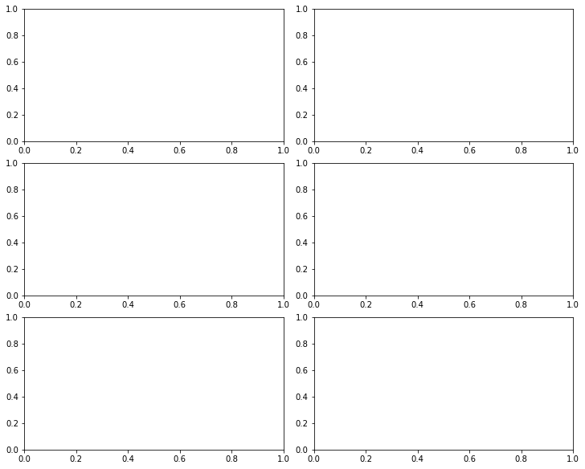
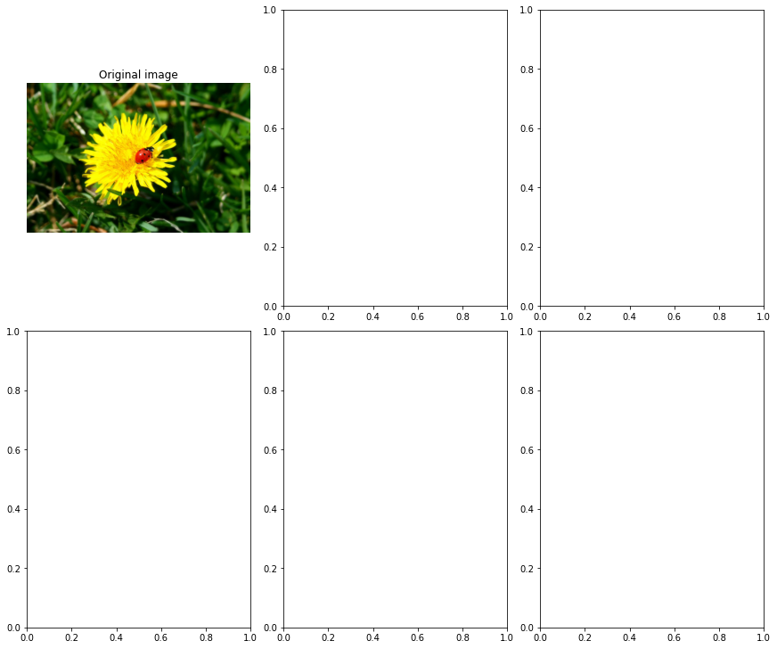
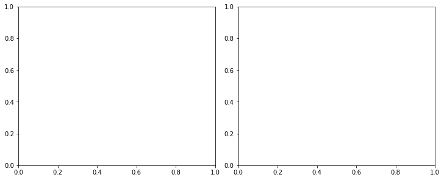

非监督学习
Contents
非监督学习¶
聚类¶
import matplotlib.pyplot as plt
import numpy as np
import pandas as pd
from sklearn.datasets import load_iris
---------------------------------------------------------------------------
ModuleNotFoundError Traceback (most recent call last)
Input In [2], in <cell line: 1>()
----> 1 from sklearn.datasets import load_iris
ModuleNotFoundError: No module named 'sklearn'
data = load_iris()
X = data.data
y = data.target
data.target_names
---------------------------------------------------------------------------
NameError Traceback (most recent call last)
Input In [3], in <cell line: 1>()
----> 1 data = load_iris()
2 X = data.data
3 y = data.target
NameError: name 'load_iris' is not defined
_, axes = plt.subplots(1, 2, figsize=(10, 4), constrained_layout=True)
axes[0].plot(X[y == 0, 2], X[y == 0, 3], "yo", label="Iris setosa")
axes[0].plot(X[y == 1, 2], X[y == 1, 3], "bs", label="Iris versicolor")
axes[0].plot(X[y == 2, 2], X[y == 2, 3], "g^", label="Iris virginica")
axes[0].set_xlabel("Petal length", fontsize='medium')
axes[0].set_ylabel("Petal width", fontsize='medium')
axes[0].legend(fontsize=12)
axes[1].scatter(X[:, 2], X[:, 3], c="k", marker=".")
axes[1].set_xlabel("Petal length", fontsize='medium')
axes[1].tick_params(labelleft=False)
plt.show()
---------------------------------------------------------------------------
NameError Traceback (most recent call last)
Input In [4], in <cell line: 3>()
1 _, axes = plt.subplots(1, 2, figsize=(10, 4), constrained_layout=True)
----> 3 axes[0].plot(X[y == 0, 2], X[y == 0, 3], "yo", label="Iris setosa")
4 axes[0].plot(X[y == 1, 2], X[y == 1, 3], "bs", label="Iris versicolor")
5 axes[0].plot(X[y == 2, 2], X[y == 2, 3], "g^", label="Iris virginica")
NameError: name 'X' is not defined

K-Means¶
from sklearn.datasets import make_blobs
---------------------------------------------------------------------------
ModuleNotFoundError Traceback (most recent call last)
Input In [5], in <cell line: 1>()
----> 1 from sklearn.datasets import make_blobs
ModuleNotFoundError: No module named 'sklearn'
blob_centers = np.array([[0.2, 2.3], [-1.5, 2.3], [-2.8, 1.8], [-2.8, 2.8],
[-2.8, 1.3]])
blob_std = np.array([0.4, 0.3, 0.1, 0.1, 0.1])
X, y = make_blobs(n_samples=2000,
centers=blob_centers,
cluster_std=blob_std,
random_state=7)
---------------------------------------------------------------------------
NameError Traceback (most recent call last)
Input In [7], in <cell line: 1>()
----> 1 X, y = make_blobs(n_samples=2000,
2 centers=blob_centers,
3 cluster_std=blob_std,
4 random_state=7)
NameError: name 'make_blobs' is not defined
def plot_clusters(ax, X, y=None):
ax.scatter(X[:, 0], X[:, 1], c=y, s=1)
ax.set_xlabel("$x_1$", fontsize='medium')
ax.set_ylabel("$x_2$", fontsize='medium', rotation=0)
_, ax = plt.subplots(figsize=(6, 4))
plot_clusters(ax, X)
plt.show()
---------------------------------------------------------------------------
NameError Traceback (most recent call last)
Input In [9], in <cell line: 3>()
1 _, ax = plt.subplots(figsize=(6, 4))
----> 3 plot_clusters(ax, X)
5 plt.show()
NameError: name 'X' is not defined

拟合¶
from sklearn.cluster import KMeans
---------------------------------------------------------------------------
ModuleNotFoundError Traceback (most recent call last)
Input In [10], in <cell line: 1>()
----> 1 from sklearn.cluster import KMeans
ModuleNotFoundError: No module named 'sklearn'
k = 5
kmeans = KMeans(n_clusters=k, random_state=42)
y_pred = kmeans.fit_predict(X)
---------------------------------------------------------------------------
NameError Traceback (most recent call last)
Input In [11], in <cell line: 2>()
1 k = 5
----> 2 kmeans = KMeans(n_clusters=k, random_state=42)
3 y_pred = kmeans.fit_predict(X)
NameError: name 'KMeans' is not defined
y_pred
---------------------------------------------------------------------------
NameError Traceback (most recent call last)
Input In [12], in <cell line: 1>()
----> 1 y_pred
NameError: name 'y_pred' is not defined
y_pred is kmeans.labels_
---------------------------------------------------------------------------
NameError Traceback (most recent call last)
Input In [13], in <cell line: 1>()
----> 1 y_pred is kmeans.labels_
NameError: name 'y_pred' is not defined
kmeans.cluster_centers_
---------------------------------------------------------------------------
NameError Traceback (most recent call last)
Input In [14], in <cell line: 1>()
----> 1 kmeans.cluster_centers_
NameError: name 'kmeans' is not defined
标签¶
kmeans.labels_
---------------------------------------------------------------------------
NameError Traceback (most recent call last)
Input In [15], in <cell line: 1>()
----> 1 kmeans.labels_
NameError: name 'kmeans' is not defined
X_new = np.array([[0, 2], [3, 2], [-3, 3], [-3, 2.5]])
kmeans.predict(X_new)
---------------------------------------------------------------------------
NameError Traceback (most recent call last)
Input In [16], in <cell line: 2>()
1 X_new = np.array([[0, 2], [3, 2], [-3, 3], [-3, 2.5]])
----> 2 kmeans.predict(X_new)
NameError: name 'kmeans' is not defined
决策边界¶
def plot_data(ax, X):
ax.plot(X[:, 0], X[:, 1], 'k.', markersize=2)
def plot_centroids(ax,
centroids,
weights=None,
circle_color='w',
cross_color='k'):
if weights is not None:
centroids = centroids[weights > weights.max() / 10]
ax.scatter(centroids[:, 0],
centroids[:, 1],
marker='o',
s=35,
linewidths=8,
color=circle_color,
zorder=10,
alpha=0.9)
ax.scatter(centroids[:, 0],
centroids[:, 1],
marker='x',
s=2,
linewidths=12,
color=cross_color,
zorder=11,
alpha=1)
def plot_decision_boundaries(ax,
clusterer,
X,
resolution=1000,
show_centroids=True,
show_xlabels=True,
show_ylabels=True):
mins = X.min(axis=0) - 0.1
maxs = X.max(axis=0) + 0.1
xx, yy = np.meshgrid(np.linspace(mins[0], maxs[0], resolution),
np.linspace(mins[1], maxs[1], resolution))
Z = clusterer.predict(np.c_[xx.ravel(), yy.ravel()])
Z = Z.reshape(xx.shape)
ax.contourf(Z, extent=(mins[0], maxs[0], mins[1], maxs[1]), cmap="Pastel2")
ax.contour(Z,
extent=(mins[0], maxs[0], mins[1], maxs[1]),
linewidths=1,
colors='k')
plot_data(ax, X)
if show_centroids:
plot_centroids(ax, clusterer.cluster_centers_)
if show_xlabels:
ax.set_xlabel("$x_1$", fontsize='medium')
else:
ax.tick_params(labelbottom=False)
if show_ylabels:
ax.set_ylabel("$x_2$", fontsize='medium', rotation=0)
else:
ax.tick_params(labelleft=False)
_, ax = plt.subplots(figsize=(6, 4))
plot_decision_boundaries(ax, kmeans, X)
plt.show()
---------------------------------------------------------------------------
NameError Traceback (most recent call last)
Input In [18], in <cell line: 3>()
1 _, ax = plt.subplots(figsize=(6, 4))
----> 3 plot_decision_boundaries(ax, kmeans, X)
5 plt.show()
NameError: name 'kmeans' is not defined

硬聚类、软聚类¶
kmeans.transform(X_new)
---------------------------------------------------------------------------
NameError Traceback (most recent call last)
Input In [19], in <cell line: 1>()
----> 1 kmeans.transform(X_new)
NameError: name 'kmeans' is not defined
np.linalg.norm(np.tile(X_new,
(1, k)).reshape(-1, k, 2) - kmeans.cluster_centers_,
axis=2)
---------------------------------------------------------------------------
NameError Traceback (most recent call last)
Input In [20], in <cell line: 1>()
1 np.linalg.norm(np.tile(X_new,
----> 2 (1, k)).reshape(-1, k, 2) - kmeans.cluster_centers_,
3 axis=2)
NameError: name 'kmeans' is not defined
算法过程¶
kmeans_iter1 = KMeans(n_clusters=5,
init="random",
n_init=1,
algorithm="lloyd",
max_iter=1,
random_state=0)
kmeans_iter2 = KMeans(n_clusters=5,
init="random",
n_init=1,
algorithm="lloyd",
max_iter=2,
random_state=0)
kmeans_iter3 = KMeans(n_clusters=5,
init="random",
n_init=1,
algorithm="lloyd",
max_iter=3,
random_state=0)
kmeans_iter1.fit(X)
kmeans_iter2.fit(X)
kmeans_iter3.fit(X)
---------------------------------------------------------------------------
NameError Traceback (most recent call last)
Input In [21], in <cell line: 1>()
----> 1 kmeans_iter1 = KMeans(n_clusters=5,
2 init="random",
3 n_init=1,
4 algorithm="lloyd",
5 max_iter=1,
6 random_state=0)
7 kmeans_iter2 = KMeans(n_clusters=5,
8 init="random",
9 n_init=1,
10 algorithm="lloyd",
11 max_iter=2,
12 random_state=0)
13 kmeans_iter3 = KMeans(n_clusters=5,
14 init="random",
15 n_init=1,
16 algorithm="lloyd",
17 max_iter=3,
18 random_state=0)
NameError: name 'KMeans' is not defined
_, axes = plt.subplots(3, 2, figsize=(10, 8), constrained_layout=True)
plot_data(axes[0, 0], X)
plot_centroids(axes[0, 0],
kmeans_iter1.cluster_centers_,
circle_color='r',
cross_color='w')
axes[0, 0].set_ylabel("$x_2$", fontsize='medium', rotation=0)
axes[0, 0].tick_params(labelbottom=False)
axes[0, 0].set_title("Update the centroids (initially randomly)",
fontsize='medium')
plot_decision_boundaries(axes[0, 1],
kmeans_iter1,
X,
show_xlabels=False,
show_ylabels=False)
axes[0, 1].set_title("Label the instances", fontsize='medium')
plot_decision_boundaries(axes[1, 0],
kmeans_iter1,
X,
show_centroids=False,
show_xlabels=False)
plot_centroids(axes[1, 0], kmeans_iter2.cluster_centers_)
plot_decision_boundaries(axes[1, 1],
kmeans_iter2,
X,
show_xlabels=False,
show_ylabels=False)
plot_decision_boundaries(axes[2, 0], kmeans_iter2, X, show_centroids=False)
plot_centroids(axes[2, 0], kmeans_iter3.cluster_centers_)
plot_decision_boundaries(axes[2, 1], kmeans_iter3, X, show_ylabels=False)
plt.show()
---------------------------------------------------------------------------
NameError Traceback (most recent call last)
Input In [22], in <cell line: 3>()
1 _, axes = plt.subplots(3, 2, figsize=(10, 8), constrained_layout=True)
----> 3 plot_data(axes[0, 0], X)
4 plot_centroids(axes[0, 0],
5 kmeans_iter1.cluster_centers_,
6 circle_color='r',
7 cross_color='w')
8 axes[0, 0].set_ylabel("$x_2$", fontsize='medium', rotation=0)
NameError: name 'X' is not defined

变体¶
def plot_clusterer_comparison(clusterer1,
clusterer2,
X,
title1=None,
title2=None):
clusterer1.fit(X)
clusterer2.fit(X)
_, axes = plt.subplots(1, 2, figsize=(10, 4), constrained_layout=True)
plot_decision_boundaries(axes[0], clusterer1, X)
if title1:
axes[0].set_title(title1, fontsize='medium')
plot_decision_boundaries(axes[1], clusterer2, X, show_ylabels=False)
if title2:
axes[1].set_title(title2, fontsize='medium')
kmeans_rnd_init1 = KMeans(n_clusters=5,
init="random",
n_init=1,
algorithm="lloyd",
random_state=2)
kmeans_rnd_init2 = KMeans(n_clusters=5,
init="random",
n_init=1,
algorithm="lloyd",
random_state=5)
plot_clusterer_comparison(kmeans_rnd_init1, kmeans_rnd_init2, X, "Solution 1",
"Solution 2 (with a different random init)")
plt.show()
---------------------------------------------------------------------------
NameError Traceback (most recent call last)
Input In [24], in <cell line: 1>()
----> 1 kmeans_rnd_init1 = KMeans(n_clusters=5,
2 init="random",
3 n_init=1,
4 algorithm="lloyd",
5 random_state=2)
6 kmeans_rnd_init2 = KMeans(n_clusters=5,
7 init="random",
8 n_init=1,
9 algorithm="lloyd",
10 random_state=5)
12 plot_clusterer_comparison(kmeans_rnd_init1, kmeans_rnd_init2, X, "Solution 1",
13 "Solution 2 (with a different random init)")
NameError: name 'KMeans' is not defined
惯量¶
kmeans.inertia_
---------------------------------------------------------------------------
NameError Traceback (most recent call last)
Input In [25], in <cell line: 1>()
----> 1 kmeans.inertia_
NameError: name 'kmeans' is not defined
X_dist = kmeans.transform(X)
np.sum(X_dist[np.arange(len(X_dist)), kmeans.labels_]**2)
---------------------------------------------------------------------------
NameError Traceback (most recent call last)
Input In [26], in <cell line: 1>()
----> 1 X_dist = kmeans.transform(X)
2 np.sum(X_dist[np.arange(len(X_dist)), kmeans.labels_]**2)
NameError: name 'kmeans' is not defined
kmeans.score(X)
---------------------------------------------------------------------------
NameError Traceback (most recent call last)
Input In [27], in <cell line: 1>()
----> 1 kmeans.score(X)
NameError: name 'kmeans' is not defined
多初始化¶
kmeans_rnd_init1.inertia_
---------------------------------------------------------------------------
NameError Traceback (most recent call last)
Input In [28], in <cell line: 1>()
----> 1 kmeans_rnd_init1.inertia_
NameError: name 'kmeans_rnd_init1' is not defined
kmeans_rnd_init2.inertia_
---------------------------------------------------------------------------
NameError Traceback (most recent call last)
Input In [29], in <cell line: 1>()
----> 1 kmeans_rnd_init2.inertia_
NameError: name 'kmeans_rnd_init2' is not defined
kmeans_rnd_10_inits = KMeans(n_clusters=5,
init="random",
n_init=10,
algorithm="lloyd",
random_state=2)
kmeans_rnd_10_inits.fit(X)
---------------------------------------------------------------------------
NameError Traceback (most recent call last)
Input In [30], in <cell line: 1>()
----> 1 kmeans_rnd_10_inits = KMeans(n_clusters=5,
2 init="random",
3 n_init=10,
4 algorithm="lloyd",
5 random_state=2)
6 kmeans_rnd_10_inits.fit(X)
NameError: name 'KMeans' is not defined
_, ax = plt.subplots(figsize=(6, 4))
plot_decision_boundaries(ax, kmeans_rnd_10_inits, X)
plt.show()
---------------------------------------------------------------------------
NameError Traceback (most recent call last)
Input In [31], in <cell line: 3>()
1 _, ax = plt.subplots(figsize=(6, 4))
----> 3 plot_decision_boundaries(ax, kmeans_rnd_10_inits, X)
4 plt.show()
NameError: name 'kmeans_rnd_10_inits' is not defined

形心初始化¶
KMeans()
---------------------------------------------------------------------------
NameError Traceback (most recent call last)
Input In [32], in <cell line: 1>()
----> 1 KMeans()
NameError: name 'KMeans' is not defined
good_init = np.array([[-3, 3], [-3, 2], [-3, 1], [-1, 2], [0, 2]])
kmeans = KMeans(n_clusters=5, init=good_init, n_init=1, random_state=42)
kmeans.fit(X)
kmeans.inertia_
---------------------------------------------------------------------------
NameError Traceback (most recent call last)
Input In [33], in <cell line: 2>()
1 good_init = np.array([[-3, 3], [-3, 2], [-3, 1], [-1, 2], [0, 2]])
----> 2 kmeans = KMeans(n_clusters=5, init=good_init, n_init=1, random_state=42)
3 kmeans.fit(X)
4 kmeans.inertia_
NameError: name 'KMeans' is not defined
加速¶
%timeit -n 50 KMeans(algorithm="elkan", random_state=42).fit(X)
---------------------------------------------------------------------------
NameError Traceback (most recent call last)
Input In [34], in <cell line: 1>()
----> 1 get_ipython().run_line_magic('timeit', '-n 50 KMeans(algorithm="elkan", random_state=42).fit(X)')
File /opt/homebrew/Caskroom/mambaforge/base/lib/python3.10/site-packages/IPython/core/interactiveshell.py:2304, in InteractiveShell.run_line_magic(self, magic_name, line, _stack_depth)
2302 kwargs['local_ns'] = self.get_local_scope(stack_depth)
2303 with self.builtin_trap:
-> 2304 result = fn(*args, **kwargs)
2305 return result
File /opt/homebrew/Caskroom/mambaforge/base/lib/python3.10/site-packages/IPython/core/magics/execution.py:1166, in ExecutionMagics.timeit(self, line, cell, local_ns)
1163 if time_number >= 0.2:
1164 break
-> 1166 all_runs = timer.repeat(repeat, number)
1167 best = min(all_runs) / number
1168 worst = max(all_runs) / number
File /opt/homebrew/Caskroom/mambaforge/base/lib/python3.10/timeit.py:206, in Timer.repeat(self, repeat, number)
204 r = []
205 for i in range(repeat):
--> 206 t = self.timeit(number)
207 r.append(t)
208 return r
File /opt/homebrew/Caskroom/mambaforge/base/lib/python3.10/site-packages/IPython/core/magics/execution.py:156, in Timer.timeit(self, number)
154 gc.disable()
155 try:
--> 156 timing = self.inner(it, self.timer)
157 finally:
158 if gcold:
File <magic-timeit>:1, in inner(_it, _timer)
NameError: name 'KMeans' is not defined
%timeit -n 50 KMeans(algorithm="lloyd", random_state=42).fit(X)
---------------------------------------------------------------------------
NameError Traceback (most recent call last)
Input In [35], in <cell line: 1>()
----> 1 get_ipython().run_line_magic('timeit', '-n 50 KMeans(algorithm="lloyd", random_state=42).fit(X)')
File /opt/homebrew/Caskroom/mambaforge/base/lib/python3.10/site-packages/IPython/core/interactiveshell.py:2304, in InteractiveShell.run_line_magic(self, magic_name, line, _stack_depth)
2302 kwargs['local_ns'] = self.get_local_scope(stack_depth)
2303 with self.builtin_trap:
-> 2304 result = fn(*args, **kwargs)
2305 return result
File /opt/homebrew/Caskroom/mambaforge/base/lib/python3.10/site-packages/IPython/core/magics/execution.py:1166, in ExecutionMagics.timeit(self, line, cell, local_ns)
1163 if time_number >= 0.2:
1164 break
-> 1166 all_runs = timer.repeat(repeat, number)
1167 best = min(all_runs) / number
1168 worst = max(all_runs) / number
File /opt/homebrew/Caskroom/mambaforge/base/lib/python3.10/timeit.py:206, in Timer.repeat(self, repeat, number)
204 r = []
205 for i in range(repeat):
--> 206 t = self.timeit(number)
207 r.append(t)
208 return r
File /opt/homebrew/Caskroom/mambaforge/base/lib/python3.10/site-packages/IPython/core/magics/execution.py:156, in Timer.timeit(self, number)
154 gc.disable()
155 try:
--> 156 timing = self.inner(it, self.timer)
157 finally:
158 if gcold:
File <magic-timeit>:1, in inner(_it, _timer)
NameError: name 'KMeans' is not defined
小批量 K-Means¶
from sklearn.cluster import MiniBatchKMeans
---------------------------------------------------------------------------
ModuleNotFoundError Traceback (most recent call last)
Input In [36], in <cell line: 1>()
----> 1 from sklearn.cluster import MiniBatchKMeans
ModuleNotFoundError: No module named 'sklearn'
minibatch_kmeans = MiniBatchKMeans(n_clusters=5, random_state=42)
minibatch_kmeans.fit(X)
---------------------------------------------------------------------------
NameError Traceback (most recent call last)
Input In [37], in <cell line: 1>()
----> 1 minibatch_kmeans = MiniBatchKMeans(n_clusters=5, random_state=42)
2 minibatch_kmeans.fit(X)
NameError: name 'MiniBatchKMeans' is not defined
minibatch_kmeans.inertia_
---------------------------------------------------------------------------
NameError Traceback (most recent call last)
Input In [38], in <cell line: 1>()
----> 1 minibatch_kmeans.inertia_
NameError: name 'minibatch_kmeans' is not defined
import urllib.request
from sklearn.datasets import fetch_openml
mnist = fetch_openml('mnist_784', version=1, as_frame=False)
mnist.target = mnist.target.astype(np.int64)
---------------------------------------------------------------------------
ModuleNotFoundError Traceback (most recent call last)
Input In [39], in <cell line: 2>()
1 import urllib.request
----> 2 from sklearn.datasets import fetch_openml
4 mnist = fetch_openml('mnist_784', version=1, as_frame=False)
5 mnist.target = mnist.target.astype(np.int64)
ModuleNotFoundError: No module named 'sklearn'
from sklearn.model_selection import train_test_split
X_train, X_test, y_train, y_test = train_test_split(
mnist["data"], mnist["target"], random_state=42)
---------------------------------------------------------------------------
ModuleNotFoundError Traceback (most recent call last)
Input In [40], in <cell line: 1>()
----> 1 from sklearn.model_selection import train_test_split
3 X_train, X_test, y_train, y_test = train_test_split(
4 mnist["data"], mnist["target"], random_state=42)
ModuleNotFoundError: No module named 'sklearn'
保存模型¶
filename = "../../datasets/handson/mnist_784.data"
X_mm = np.memmap(filename, dtype='float32', mode='write', shape=X_train.shape)
X_mm[:] = X_train
---------------------------------------------------------------------------
NameError Traceback (most recent call last)
Input In [41], in <cell line: 2>()
1 filename = "../../datasets/handson/mnist_784.data"
----> 2 X_mm = np.memmap(filename, dtype='float32', mode='write', shape=X_train.shape)
3 X_mm[:] = X_train
NameError: name 'X_train' is not defined
minibatch_kmeans = MiniBatchKMeans(n_clusters=10,
batch_size=10,
random_state=42)
minibatch_kmeans.fit(X_mm)
---------------------------------------------------------------------------
NameError Traceback (most recent call last)
Input In [42], in <cell line: 1>()
----> 1 minibatch_kmeans = MiniBatchKMeans(n_clusters=10,
2 batch_size=10,
3 random_state=42)
4 minibatch_kmeans.fit(X_mm)
NameError: name 'MiniBatchKMeans' is not defined
def load_next_batch(batch_size):
return X[np.random.choice(len(X), batch_size, replace=False)]
np.random.seed(42)
k = 5
n_init = 10
n_iterations = 100
batch_size = 100
init_size = 500 # more data for K-Means++ initialization
evaluate_on_last_n_iters = 10
best_kmeans = None
for init in range(n_init):
minibatch_kmeans = MiniBatchKMeans(n_clusters=k, init_size=init_size)
X_init = load_next_batch(init_size)
minibatch_kmeans.partial_fit(X_init)
minibatch_kmeans.sum_inertia_ = 0
for iteration in range(n_iterations):
X_batch = load_next_batch(batch_size)
minibatch_kmeans.partial_fit(X_batch)
if iteration >= n_iterations - evaluate_on_last_n_iters:
minibatch_kmeans.sum_inertia_ += minibatch_kmeans.inertia_
if (best_kmeans is None
or minibatch_kmeans.sum_inertia_ < best_kmeans.sum_inertia_):
best_kmeans = minibatch_kmeans
---------------------------------------------------------------------------
NameError Traceback (most recent call last)
Input In [44], in <cell line: 12>()
10 best_kmeans = None
12 for init in range(n_init):
---> 13 minibatch_kmeans = MiniBatchKMeans(n_clusters=k, init_size=init_size)
14 X_init = load_next_batch(init_size)
15 minibatch_kmeans.partial_fit(X_init)
NameError: name 'MiniBatchKMeans' is not defined
best_kmeans.score(X)
---------------------------------------------------------------------------
AttributeError Traceback (most recent call last)
Input In [45], in <cell line: 1>()
----> 1 best_kmeans.score(X)
AttributeError: 'NoneType' object has no attribute 'score'
%timeit KMeans(n_clusters=5, random_state=42).fit(X)
---------------------------------------------------------------------------
NameError Traceback (most recent call last)
Input In [46], in <cell line: 1>()
----> 1 get_ipython().run_line_magic('timeit', 'KMeans(n_clusters=5, random_state=42).fit(X)')
File /opt/homebrew/Caskroom/mambaforge/base/lib/python3.10/site-packages/IPython/core/interactiveshell.py:2304, in InteractiveShell.run_line_magic(self, magic_name, line, _stack_depth)
2302 kwargs['local_ns'] = self.get_local_scope(stack_depth)
2303 with self.builtin_trap:
-> 2304 result = fn(*args, **kwargs)
2305 return result
File /opt/homebrew/Caskroom/mambaforge/base/lib/python3.10/site-packages/IPython/core/magics/execution.py:1162, in ExecutionMagics.timeit(self, line, cell, local_ns)
1160 for index in range(0, 10):
1161 number = 10 ** index
-> 1162 time_number = timer.timeit(number)
1163 if time_number >= 0.2:
1164 break
File /opt/homebrew/Caskroom/mambaforge/base/lib/python3.10/site-packages/IPython/core/magics/execution.py:156, in Timer.timeit(self, number)
154 gc.disable()
155 try:
--> 156 timing = self.inner(it, self.timer)
157 finally:
158 if gcold:
File <magic-timeit>:1, in inner(_it, _timer)
NameError: name 'KMeans' is not defined
%timeit MiniBatchKMeans(n_clusters=5, random_state=42).fit(X)
---------------------------------------------------------------------------
NameError Traceback (most recent call last)
Input In [47], in <cell line: 1>()
----> 1 get_ipython().run_line_magic('timeit', 'MiniBatchKMeans(n_clusters=5, random_state=42).fit(X)')
File /opt/homebrew/Caskroom/mambaforge/base/lib/python3.10/site-packages/IPython/core/interactiveshell.py:2304, in InteractiveShell.run_line_magic(self, magic_name, line, _stack_depth)
2302 kwargs['local_ns'] = self.get_local_scope(stack_depth)
2303 with self.builtin_trap:
-> 2304 result = fn(*args, **kwargs)
2305 return result
File /opt/homebrew/Caskroom/mambaforge/base/lib/python3.10/site-packages/IPython/core/magics/execution.py:1162, in ExecutionMagics.timeit(self, line, cell, local_ns)
1160 for index in range(0, 10):
1161 number = 10 ** index
-> 1162 time_number = timer.timeit(number)
1163 if time_number >= 0.2:
1164 break
File /opt/homebrew/Caskroom/mambaforge/base/lib/python3.10/site-packages/IPython/core/magics/execution.py:156, in Timer.timeit(self, number)
154 gc.disable()
155 try:
--> 156 timing = self.inner(it, self.timer)
157 finally:
158 if gcold:
File <magic-timeit>:1, in inner(_it, _timer)
NameError: name 'MiniBatchKMeans' is not defined
from timeit import timeit
n_total = 50
times = np.empty((n_total, 2))
inertias = np.empty((n_total, 2))
for k in range(1, n_total + 1):
kmeans_ = KMeans(n_clusters=k, random_state=42)
minibatch_kmeans = MiniBatchKMeans(n_clusters=k, random_state=42)
print("\r{}/{}".format(k, n_total), end="")
times[k - 1, 0] = timeit("kmeans_.fit(X)", number=10, globals=globals())
times[k - 1, 1] = timeit("minibatch_kmeans.fit(X)",
number=10,
globals=globals())
inertias[k - 1, 0] = kmeans_.inertia_
inertias[k - 1, 1] = minibatch_kmeans.inertia_
---------------------------------------------------------------------------
NameError Traceback (most recent call last)
Input In [49], in <cell line: 6>()
4 inertias = np.empty((n_total, 2))
6 for k in range(1, n_total + 1):
----> 7 kmeans_ = KMeans(n_clusters=k, random_state=42)
8 minibatch_kmeans = MiniBatchKMeans(n_clusters=k, random_state=42)
9 print("\r{}/{}".format(k, n_total), end="")
NameError: name 'KMeans' is not defined
_, axes = plt.subplots(1, 2, figsize=(10, 4), constrained_layout=True)
axes[0].plot(range(1, n_total + 1), inertias[:, 0], "r--", label="K-Means")
axes[0].plot(range(1, n_total + 1),
inertias[:, 1],
"b.-",
label="Mini-batch K-Means")
axes[0].set_xlabel("$k$", fontsize='large')
axes[0].set_title("Inertia", fontsize='medium')
axes[0].legend(fontsize='medium')
axes[0].axis([1, n_total, 0, 100])
axes[1].plot(range(1, n_total + 1), times[:, 0], "r--", label="K-Means")
axes[1].plot(range(1, n_total + 1),
times[:, 1],
"b.-",
label="Mini-batch K-Means")
axes[1].set_xlabel("$k$", fontsize='large')
axes[1].set_title("Training time (seconds)", fontsize='medium')
axes[1].axis([1, n_total, 0, 6])
plt.show()

最优聚类数¶
kmeans_k3 = KMeans(n_clusters=3, random_state=42)
kmeans_k8 = KMeans(n_clusters=8, random_state=42)
plot_clusterer_comparison(kmeans_k3, kmeans_k8, X, "$k=3$", "$k=8$")
plt.show()
---------------------------------------------------------------------------
NameError Traceback (most recent call last)
Input In [51], in <cell line: 1>()
----> 1 kmeans_k3 = KMeans(n_clusters=3, random_state=42)
2 kmeans_k8 = KMeans(n_clusters=8, random_state=42)
4 plot_clusterer_comparison(kmeans_k3, kmeans_k8, X, "$k=3$", "$k=8$")
NameError: name 'KMeans' is not defined
kmeans_k3.inertia_
---------------------------------------------------------------------------
NameError Traceback (most recent call last)
Input In [52], in <cell line: 1>()
----> 1 kmeans_k3.inertia_
NameError: name 'kmeans_k3' is not defined
kmeans_k8.inertia_
---------------------------------------------------------------------------
NameError Traceback (most recent call last)
Input In [53], in <cell line: 1>()
----> 1 kmeans_k8.inertia_
NameError: name 'kmeans_k8' is not defined
kmeans_per_k = [
KMeans(n_clusters=k, random_state=42).fit(X) for k in range(1, 10)
]
inertias = [model.inertia_ for model in kmeans_per_k]
---------------------------------------------------------------------------
NameError Traceback (most recent call last)
Input In [54], in <cell line: 1>()
----> 1 kmeans_per_k = [
2 KMeans(n_clusters=k, random_state=42).fit(X) for k in range(1, 10)
3 ]
4 inertias = [model.inertia_ for model in kmeans_per_k]
Input In [54], in <listcomp>(.0)
1 kmeans_per_k = [
----> 2 KMeans(n_clusters=k, random_state=42).fit(X) for k in range(1, 10)
3 ]
4 inertias = [model.inertia_ for model in kmeans_per_k]
NameError: name 'KMeans' is not defined
_, ax = plt.subplots(figsize=(6, 4))
ax.plot(range(1, 10), inertias, "bo-")
ax.set_xlabel("$k$", fontsize='medium')
ax.set_ylabel("Inertia", fontsize='medium')
ax.annotate('Elbow',
xy=(4, inertias[3]),
xytext=(0.55, 0.55),
textcoords='figure fraction',
fontsize='large',
arrowprops=dict(facecolor='black', shrink=0.1))
ax.axis([1, 8.5, 0, 1300])
plt.show()
---------------------------------------------------------------------------
ValueError Traceback (most recent call last)
Input In [55], in <cell line: 3>()
1 _, ax = plt.subplots(figsize=(6, 4))
----> 3 ax.plot(range(1, 10), inertias, "bo-")
4 ax.set_xlabel("$k$", fontsize='medium')
5 ax.set_ylabel("Inertia", fontsize='medium')
File /opt/homebrew/Caskroom/mambaforge/base/lib/python3.10/site-packages/matplotlib/axes/_axes.py:1632, in Axes.plot(self, scalex, scaley, data, *args, **kwargs)
1390 """
1391 Plot y versus x as lines and/or markers.
1392
(...)
1629 (``'green'``) or hex strings (``'#008000'``).
1630 """
1631 kwargs = cbook.normalize_kwargs(kwargs, mlines.Line2D)
-> 1632 lines = [*self._get_lines(*args, data=data, **kwargs)]
1633 for line in lines:
1634 self.add_line(line)
File /opt/homebrew/Caskroom/mambaforge/base/lib/python3.10/site-packages/matplotlib/axes/_base.py:312, in _process_plot_var_args.__call__(self, data, *args, **kwargs)
310 this += args[0],
311 args = args[1:]
--> 312 yield from self._plot_args(this, kwargs)
File /opt/homebrew/Caskroom/mambaforge/base/lib/python3.10/site-packages/matplotlib/axes/_base.py:498, in _process_plot_var_args._plot_args(self, tup, kwargs, return_kwargs)
495 self.axes.yaxis.update_units(y)
497 if x.shape[0] != y.shape[0]:
--> 498 raise ValueError(f"x and y must have same first dimension, but "
499 f"have shapes {x.shape} and {y.shape}")
500 if x.ndim > 2 or y.ndim > 2:
501 raise ValueError(f"x and y can be no greater than 2D, but have "
502 f"shapes {x.shape} and {y.shape}")
ValueError: x and y must have same first dimension, but have shapes (9,) and (50, 2)

_, ax = plt.subplots(figsize=(6, 4))
plot_decision_boundaries(ax, kmeans_per_k[4 - 1], X)
plt.show()
---------------------------------------------------------------------------
NameError Traceback (most recent call last)
Input In [56], in <cell line: 3>()
1 _, ax = plt.subplots(figsize=(6, 4))
----> 3 plot_decision_boundaries(ax, kmeans_per_k[4 - 1], X)
4 plt.show()
NameError: name 'kmeans_per_k' is not defined

轮廓值¶
from sklearn.metrics import silhouette_score
---------------------------------------------------------------------------
ModuleNotFoundError Traceback (most recent call last)
Input In [57], in <cell line: 1>()
----> 1 from sklearn.metrics import silhouette_score
ModuleNotFoundError: No module named 'sklearn'
silhouette_score(X, kmeans.labels_)
---------------------------------------------------------------------------
NameError Traceback (most recent call last)
Input In [58], in <cell line: 1>()
----> 1 silhouette_score(X, kmeans.labels_)
NameError: name 'silhouette_score' is not defined
silhouette_scores = [
silhouette_score(X, model.labels_) for model in kmeans_per_k[1:]
]
---------------------------------------------------------------------------
NameError Traceback (most recent call last)
Input In [59], in <cell line: 1>()
1 silhouette_scores = [
----> 2 silhouette_score(X, model.labels_) for model in kmeans_per_k[1:]
3 ]
NameError: name 'kmeans_per_k' is not defined
_, ax = plt.subplots(figsize=(6, 4))
ax.plot(range(2, 10), silhouette_scores, "bo-")
ax.set_xlabel("$k$", fontsize='medium')
ax.set_ylabel("Silhouette score", fontsize='medium')
ax.axis([1.8, 8.5, 0.55, 0.7])
plt.show()
---------------------------------------------------------------------------
NameError Traceback (most recent call last)
Input In [60], in <cell line: 3>()
1 _, ax = plt.subplots(figsize=(6, 4))
----> 3 ax.plot(range(2, 10), silhouette_scores, "bo-")
4 ax.set_xlabel("$k$", fontsize='medium')
5 ax.set_ylabel("Silhouette score", fontsize='medium')
NameError: name 'silhouette_scores' is not defined

from sklearn.metrics import silhouette_samples
from matplotlib.ticker import FixedLocator, FixedFormatter
import matplotlib as mpl
plt.figure(figsize=(11, 9))
for k in (3, 4, 5, 6):
plt.subplot(2, 2, k - 2)
y_pred = kmeans_per_k[k - 1].labels_
silhouette_coefficients = silhouette_samples(X, y_pred)
padding = len(X) // 30
pos = padding
ticks = []
for i in range(k):
coeffs = silhouette_coefficients[y_pred == i]
coeffs.sort()
color = mpl.cm.Spectral(i / k)
plt.fill_betweenx(np.arange(pos, pos + len(coeffs)),
0,
coeffs,
facecolor=color,
edgecolor=color,
alpha=0.7)
ticks.append(pos + len(coeffs) // 2)
pos += len(coeffs) + padding
plt.gca().yaxis.set_major_locator(FixedLocator(ticks))
plt.gca().yaxis.set_major_formatter(FixedFormatter(range(k)))
if k in (3, 5):
plt.ylabel("Cluster")
if k in (5, 6):
plt.gca().set_xticks([-0.1, 0, 0.2, 0.4, 0.6, 0.8, 1])
plt.xlabel("Silhouette Coefficient")
else:
plt.tick_params(labelbottom=False)
plt.axvline(x=silhouette_scores[k - 2], color="red", linestyle="--")
plt.title(f"$k={k}$", fontsize='large')
plt.show()
---------------------------------------------------------------------------
ModuleNotFoundError Traceback (most recent call last)
Input In [61], in <cell line: 1>()
----> 1 from sklearn.metrics import silhouette_samples
2 from matplotlib.ticker import FixedLocator, FixedFormatter
3 import matplotlib as mpl
ModuleNotFoundError: No module named 'sklearn'
K-Means 限制¶
X1, y1 = make_blobs(n_samples=1000, centers=((4, -4), (0, 0)), random_state=42)
X1 = X1.dot(np.array([[0.374, 0.95], [0.732, 0.598]]))
X2, y2 = make_blobs(n_samples=250, centers=1, random_state=42)
X2 = X2 + [6, -8]
X = np.r_[X1, X2]
y = np.r_[y1, y2]
---------------------------------------------------------------------------
NameError Traceback (most recent call last)
Input In [62], in <cell line: 1>()
----> 1 X1, y1 = make_blobs(n_samples=1000, centers=((4, -4), (0, 0)), random_state=42)
2 X1 = X1.dot(np.array([[0.374, 0.95], [0.732, 0.598]]))
3 X2, y2 = make_blobs(n_samples=250, centers=1, random_state=42)
NameError: name 'make_blobs' is not defined
_, ax = plt.subplots(figsize=(6, 4))
plot_clusters(ax, X)
---------------------------------------------------------------------------
NameError Traceback (most recent call last)
Input In [63], in <cell line: 3>()
1 _, ax = plt.subplots(figsize=(6, 4))
----> 3 plot_clusters(ax, X)
NameError: name 'X' is not defined

kmeans_good = KMeans(n_clusters=3,
init=np.array([[-1.5, 2.5], [0.5, 0], [4, 0]]),
n_init=1,
random_state=42)
kmeans_bad = KMeans(n_clusters=3, random_state=42)
kmeans_good.fit(X)
kmeans_bad.fit(X)
---------------------------------------------------------------------------
NameError Traceback (most recent call last)
Input In [64], in <cell line: 1>()
----> 1 kmeans_good = KMeans(n_clusters=3,
2 init=np.array([[-1.5, 2.5], [0.5, 0], [4, 0]]),
3 n_init=1,
4 random_state=42)
5 kmeans_bad = KMeans(n_clusters=3, random_state=42)
6 kmeans_good.fit(X)
NameError: name 'KMeans' is not defined
_, axes = plt.subplots(1, 2, figsize=(10, 4), constrained_layout=True)
plot_decision_boundaries(axes[0], kmeans_good, X)
axes[0].set_title(f"Inertia = {kmeans_good.inertia_:.1f}", fontsize='medium')
plot_decision_boundaries(axes[1], kmeans_bad, X, show_ylabels=False)
axes[1].set_title(f"Inertia = {kmeans_bad.inertia_:.1f}", fontsize='medium')
plt.show()
---------------------------------------------------------------------------
NameError Traceback (most recent call last)
Input In [65], in <cell line: 3>()
1 _, axes = plt.subplots(1, 2, figsize=(10, 4), constrained_layout=True)
----> 3 plot_decision_boundaries(axes[0], kmeans_good, X)
4 axes[0].set_title(f"Inertia = {kmeans_good.inertia_:.1f}", fontsize='medium')
6 plot_decision_boundaries(axes[1], kmeans_bad, X, show_ylabels=False)
NameError: name 'kmeans_good' is not defined

图像分割¶
from matplotlib.image import imread
images_path = '../../datasets/handson/ladybug.png'
image = imread(images_path)
image.shape
(533, 800, 3)
X = image.reshape(-1, 3)
kmeans = KMeans(n_clusters=8, random_state=42).fit(X)
segmented_img = kmeans.cluster_centers_[kmeans.labels_]
segmented_img = segmented_img.reshape(image.shape)
---------------------------------------------------------------------------
NameError Traceback (most recent call last)
Input In [67], in <cell line: 2>()
1 X = image.reshape(-1, 3)
----> 2 kmeans = KMeans(n_clusters=8, random_state=42).fit(X)
3 segmented_img = kmeans.cluster_centers_[kmeans.labels_]
4 segmented_img = segmented_img.reshape(image.shape)
NameError: name 'KMeans' is not defined
segmented_imgs = []
n_colors = (10, 8, 6, 4, 2)
for n_clusters in n_colors:
kmeans = KMeans(n_clusters=n_clusters, random_state=42).fit(X)
segmented_img = kmeans.cluster_centers_[kmeans.labels_]
segmented_imgs.append(segmented_img.reshape(image.shape))
---------------------------------------------------------------------------
NameError Traceback (most recent call last)
Input In [68], in <cell line: 3>()
2 n_colors = (10, 8, 6, 4, 2)
3 for n_clusters in n_colors:
----> 4 kmeans = KMeans(n_clusters=n_clusters, random_state=42).fit(X)
5 segmented_img = kmeans.cluster_centers_[kmeans.labels_]
6 segmented_imgs.append(segmented_img.reshape(image.shape))
NameError: name 'KMeans' is not defined
_, axes = plt.subplots(2, 3, figsize=(12, 10), constrained_layout=True)
axes[0, 0].imshow(image)
axes[0, 0].set_title("Original image")
axes[0, 0].axis('off')
for idx, ax in enumerate(axes.flatten()[1:]):
ax.imshow(segmented_imgs[idx])
ax.set_title(f"{n_clusters} colors")
ax.axis('off')
plt.show()
---------------------------------------------------------------------------
IndexError Traceback (most recent call last)
Input In [69], in <cell line: 7>()
5 axes[0, 0].axis('off')
7 for idx, ax in enumerate(axes.flatten()[1:]):
----> 8 ax.imshow(segmented_imgs[idx])
9 ax.set_title(f"{n_clusters} colors")
10 ax.axis('off')
IndexError: list index out of range

预处理¶
from sklearn.datasets import load_digits
---------------------------------------------------------------------------
ModuleNotFoundError Traceback (most recent call last)
Input In [70], in <cell line: 1>()
----> 1 from sklearn.datasets import load_digits
ModuleNotFoundError: No module named 'sklearn'
X_digits, y_digits = load_digits(return_X_y=True)
---------------------------------------------------------------------------
NameError Traceback (most recent call last)
Input In [71], in <cell line: 1>()
----> 1 X_digits, y_digits = load_digits(return_X_y=True)
NameError: name 'load_digits' is not defined
from sklearn.model_selection import train_test_split
---------------------------------------------------------------------------
ModuleNotFoundError Traceback (most recent call last)
Input In [72], in <cell line: 1>()
----> 1 from sklearn.model_selection import train_test_split
ModuleNotFoundError: No module named 'sklearn'
X_train, X_test, y_train, y_test = train_test_split(X_digits,
y_digits,
random_state=42)
---------------------------------------------------------------------------
NameError Traceback (most recent call last)
Input In [73], in <cell line: 1>()
----> 1 X_train, X_test, y_train, y_test = train_test_split(X_digits,
2 y_digits,
3 random_state=42)
NameError: name 'train_test_split' is not defined
from sklearn.linear_model import LogisticRegression
---------------------------------------------------------------------------
ModuleNotFoundError Traceback (most recent call last)
Input In [74], in <cell line: 1>()
----> 1 from sklearn.linear_model import LogisticRegression
ModuleNotFoundError: No module named 'sklearn'
log_reg = LogisticRegression(multi_class="ovr",
solver="lbfgs",
max_iter=5000,
random_state=42)
log_reg.fit(X_train, y_train)
---------------------------------------------------------------------------
NameError Traceback (most recent call last)
Input In [75], in <cell line: 1>()
----> 1 log_reg = LogisticRegression(multi_class="ovr",
2 solver="lbfgs",
3 max_iter=5000,
4 random_state=42)
5 log_reg.fit(X_train, y_train)
NameError: name 'LogisticRegression' is not defined
log_reg_score = log_reg.score(X_test, y_test)
log_reg_score
---------------------------------------------------------------------------
NameError Traceback (most recent call last)
Input In [76], in <cell line: 1>()
----> 1 log_reg_score = log_reg.score(X_test, y_test)
2 log_reg_score
NameError: name 'log_reg' is not defined
管线¶
from sklearn.pipeline import Pipeline
---------------------------------------------------------------------------
ModuleNotFoundError Traceback (most recent call last)
Input In [77], in <cell line: 1>()
----> 1 from sklearn.pipeline import Pipeline
ModuleNotFoundError: No module named 'sklearn'
pipeline = Pipeline([
("kmeans", KMeans(n_clusters=50, random_state=42)),
("log_reg",
LogisticRegression(multi_class="ovr",
solver="lbfgs",
max_iter=5000,
random_state=42)),
])
pipeline.fit(X_train, y_train)
---------------------------------------------------------------------------
NameError Traceback (most recent call last)
Input In [78], in <cell line: 1>()
----> 1 pipeline = Pipeline([
2 ("kmeans", KMeans(n_clusters=50, random_state=42)),
3 ("log_reg",
4 LogisticRegression(multi_class="ovr",
5 solver="lbfgs",
6 max_iter=5000,
7 random_state=42)),
8 ])
10 pipeline.fit(X_train, y_train)
NameError: name 'Pipeline' is not defined
pipeline_score = pipeline.score(X_test, y_test)
pipeline_score
---------------------------------------------------------------------------
NameError Traceback (most recent call last)
Input In [79], in <cell line: 1>()
----> 1 pipeline_score = pipeline.score(X_test, y_test)
2 pipeline_score
NameError: name 'pipeline' is not defined
1 - (1 - pipeline_score) / (1 - log_reg_score)
---------------------------------------------------------------------------
NameError Traceback (most recent call last)
Input In [80], in <cell line: 1>()
----> 1 1 - (1 - pipeline_score) / (1 - log_reg_score)
NameError: name 'pipeline_score' is not defined
调参¶
from sklearn.model_selection import GridSearchCV
---------------------------------------------------------------------------
ModuleNotFoundError Traceback (most recent call last)
Input In [81], in <cell line: 1>()
----> 1 from sklearn.model_selection import GridSearchCV
ModuleNotFoundError: No module named 'sklearn'
param_grid = dict(kmeans__n_clusters=range(2, 20))
grid_clf = GridSearchCV(pipeline, param_grid, cv=3, verbose=2)
grid_clf.fit(X_train, y_train)
---------------------------------------------------------------------------
NameError Traceback (most recent call last)
Input In [82], in <cell line: 2>()
1 param_grid = dict(kmeans__n_clusters=range(2, 20))
----> 2 grid_clf = GridSearchCV(pipeline, param_grid, cv=3, verbose=2)
3 grid_clf.fit(X_train, y_train)
NameError: name 'GridSearchCV' is not defined
grid_clf.best_params_
---------------------------------------------------------------------------
NameError Traceback (most recent call last)
Input In [83], in <cell line: 1>()
----> 1 grid_clf.best_params_
NameError: name 'grid_clf' is not defined
grid_clf.score(X_test, y_test)
---------------------------------------------------------------------------
NameError Traceback (most recent call last)
Input In [84], in <cell line: 1>()
----> 1 grid_clf.score(X_test, y_test)
NameError: name 'grid_clf' is not defined
半监督学习¶
n_labeled = 50
log_reg = LogisticRegression(multi_class="ovr",
solver="lbfgs",
random_state=42)
log_reg.fit(X_train[:n_labeled], y_train[:n_labeled])
log_reg.score(X_test, y_test)
---------------------------------------------------------------------------
NameError Traceback (most recent call last)
Input In [86], in <cell line: 1>()
----> 1 log_reg = LogisticRegression(multi_class="ovr",
2 solver="lbfgs",
3 random_state=42)
4 log_reg.fit(X_train[:n_labeled], y_train[:n_labeled])
5 log_reg.score(X_test, y_test)
NameError: name 'LogisticRegression' is not defined
k = 50
表示¶
kmeans = KMeans(n_clusters=k, random_state=42)
X_digits_dist = kmeans.fit_transform(X_train)
representative_digit_idx = np.argmin(X_digits_dist, axis=0)
X_representative_digits = X_train[representative_digit_idx]
---------------------------------------------------------------------------
NameError Traceback (most recent call last)
Input In [88], in <cell line: 1>()
----> 1 kmeans = KMeans(n_clusters=k, random_state=42)
2 X_digits_dist = kmeans.fit_transform(X_train)
3 representative_digit_idx = np.argmin(X_digits_dist, axis=0)
NameError: name 'KMeans' is not defined
_, axes = plt.subplots(5, 10, figsize=(10, 4), constrained_layout=True)
for X_representative_digit, ax in zip(X_representative_digits, axes.flatten()):
ax.imshow(X_representative_digit.reshape(8, 8),
cmap="binary",
interpolation="bilinear")
ax.axis('off')
plt.show()
---------------------------------------------------------------------------
NameError Traceback (most recent call last)
Input In [89], in <cell line: 3>()
1 _, axes = plt.subplots(5, 10, figsize=(10, 4), constrained_layout=True)
----> 3 for X_representative_digit, ax in zip(X_representative_digits, axes.flatten()):
4 ax.imshow(X_representative_digit.reshape(8, 8),
5 cmap="binary",
6 interpolation="bilinear")
7 ax.axis('off')
NameError: name 'X_representative_digits' is not defined

y_train[representative_digit_idx]
---------------------------------------------------------------------------
NameError Traceback (most recent call last)
Input In [90], in <cell line: 1>()
----> 1 y_train[representative_digit_idx]
NameError: name 'y_train' is not defined
y_representative_digits = np.array([
0, 1, 3, 2, 7, 6, 4, 6, 9, 5, 1, 2, 9, 5, 2, 7, 8, 1, 8, 6, 3, 2, 5, 4, 5,
4, 0, 3, 2, 6, 1, 7, 7, 9, 1, 8, 6, 5, 4, 8, 5, 3, 3, 6, 7, 9, 7, 8, 4, 9
])
log_reg = LogisticRegression(multi_class="ovr",
solver="lbfgs",
max_iter=5000,
random_state=42)
log_reg.fit(X_representative_digits, y_representative_digits)
log_reg.score(X_test, y_test)
---------------------------------------------------------------------------
NameError Traceback (most recent call last)
Input In [92], in <cell line: 1>()
----> 1 log_reg = LogisticRegression(multi_class="ovr",
2 solver="lbfgs",
3 max_iter=5000,
4 random_state=42)
5 log_reg.fit(X_representative_digits, y_representative_digits)
6 log_reg.score(X_test, y_test)
NameError: name 'LogisticRegression' is not defined
y_train_propagated = np.empty(len(X_train), dtype=np.int32)
for i in range(k):
y_train_propagated[kmeans.labels_ == i] = y_representative_digits[i]
---------------------------------------------------------------------------
NameError Traceback (most recent call last)
Input In [93], in <cell line: 1>()
----> 1 y_train_propagated = np.empty(len(X_train), dtype=np.int32)
2 for i in range(k):
3 y_train_propagated[kmeans.labels_ == i] = y_representative_digits[i]
NameError: name 'X_train' is not defined
log_reg = LogisticRegression(multi_class="ovr",
solver="lbfgs",
max_iter=5000,
random_state=42)
log_reg.fit(X_train, y_train_propagated)
---------------------------------------------------------------------------
NameError Traceback (most recent call last)
Input In [94], in <cell line: 1>()
----> 1 log_reg = LogisticRegression(multi_class="ovr",
2 solver="lbfgs",
3 max_iter=5000,
4 random_state=42)
5 log_reg.fit(X_train, y_train_propagated)
NameError: name 'LogisticRegression' is not defined
log_reg.score(X_test, y_test)
---------------------------------------------------------------------------
NameError Traceback (most recent call last)
Input In [95], in <cell line: 1>()
----> 1 log_reg.score(X_test, y_test)
NameError: name 'log_reg' is not defined
距离¶
percentile_closest = 75
X_cluster_dist = X_digits_dist[np.arange(len(X_train)), kmeans.labels_]
for i in range(k):
in_cluster = (kmeans.labels_ == i)
cluster_dist = X_cluster_dist[in_cluster]
cutoff_distance = np.percentile(cluster_dist, percentile_closest)
above_cutoff = (X_cluster_dist > cutoff_distance)
X_cluster_dist[in_cluster & above_cutoff] = -1
---------------------------------------------------------------------------
NameError Traceback (most recent call last)
Input In [96], in <cell line: 3>()
1 percentile_closest = 75
----> 3 X_cluster_dist = X_digits_dist[np.arange(len(X_train)), kmeans.labels_]
4 for i in range(k):
5 in_cluster = (kmeans.labels_ == i)
NameError: name 'X_digits_dist' is not defined
partially_propagated = (X_cluster_dist != -1)
X_train_partially_propagated = X_train[partially_propagated]
y_train_partially_propagated = y_train_propagated[partially_propagated]
---------------------------------------------------------------------------
NameError Traceback (most recent call last)
Input In [97], in <cell line: 1>()
----> 1 partially_propagated = (X_cluster_dist != -1)
2 X_train_partially_propagated = X_train[partially_propagated]
3 y_train_partially_propagated = y_train_propagated[partially_propagated]
NameError: name 'X_cluster_dist' is not defined
log_reg = LogisticRegression(multi_class="ovr",
solver="lbfgs",
max_iter=5000,
random_state=42)
log_reg.fit(X_train_partially_propagated, y_train_partially_propagated)
---------------------------------------------------------------------------
NameError Traceback (most recent call last)
Input In [98], in <cell line: 1>()
----> 1 log_reg = LogisticRegression(multi_class="ovr",
2 solver="lbfgs",
3 max_iter=5000,
4 random_state=42)
5 log_reg.fit(X_train_partially_propagated, y_train_partially_propagated)
NameError: name 'LogisticRegression' is not defined
log_reg.score(X_test, y_test)
---------------------------------------------------------------------------
NameError Traceback (most recent call last)
Input In [99], in <cell line: 1>()
----> 1 log_reg.score(X_test, y_test)
NameError: name 'log_reg' is not defined
np.mean(y_train_partially_propagated == y_train[partially_propagated])
---------------------------------------------------------------------------
NameError Traceback (most recent call last)
Input In [100], in <cell line: 1>()
----> 1 np.mean(y_train_partially_propagated == y_train[partially_propagated])
NameError: name 'y_train_partially_propagated' is not defined
DBSCAN¶
from sklearn.datasets import make_moons
---------------------------------------------------------------------------
ModuleNotFoundError Traceback (most recent call last)
Input In [101], in <cell line: 1>()
----> 1 from sklearn.datasets import make_moons
ModuleNotFoundError: No module named 'sklearn'
X, y = make_moons(n_samples=1000, noise=0.05, random_state=42)
---------------------------------------------------------------------------
NameError Traceback (most recent call last)
Input In [102], in <cell line: 1>()
----> 1 X, y = make_moons(n_samples=1000, noise=0.05, random_state=42)
NameError: name 'make_moons' is not defined
from sklearn.cluster import DBSCAN
---------------------------------------------------------------------------
ModuleNotFoundError Traceback (most recent call last)
Input In [103], in <cell line: 1>()
----> 1 from sklearn.cluster import DBSCAN
ModuleNotFoundError: No module named 'sklearn'
dbscan = DBSCAN(eps=0.05, min_samples=5)
dbscan.fit(X)
---------------------------------------------------------------------------
NameError Traceback (most recent call last)
Input In [104], in <cell line: 1>()
----> 1 dbscan = DBSCAN(eps=0.05, min_samples=5)
2 dbscan.fit(X)
NameError: name 'DBSCAN' is not defined
dbscan.labels_[:10]
---------------------------------------------------------------------------
NameError Traceback (most recent call last)
Input In [105], in <cell line: 1>()
----> 1 dbscan.labels_[:10]
NameError: name 'dbscan' is not defined
len(dbscan.core_sample_indices_)
---------------------------------------------------------------------------
NameError Traceback (most recent call last)
Input In [106], in <cell line: 1>()
----> 1 len(dbscan.core_sample_indices_)
NameError: name 'dbscan' is not defined
dbscan.core_sample_indices_[:10]
---------------------------------------------------------------------------
NameError Traceback (most recent call last)
Input In [107], in <cell line: 1>()
----> 1 dbscan.core_sample_indices_[:10]
NameError: name 'dbscan' is not defined
dbscan.components_[:3]
---------------------------------------------------------------------------
NameError Traceback (most recent call last)
Input In [108], in <cell line: 1>()
----> 1 dbscan.components_[:3]
NameError: name 'dbscan' is not defined
np.unique(dbscan.labels_)
---------------------------------------------------------------------------
NameError Traceback (most recent call last)
Input In [109], in <cell line: 1>()
----> 1 np.unique(dbscan.labels_)
NameError: name 'dbscan' is not defined
dbscan2 = DBSCAN(eps=0.2)
dbscan2.fit(X)
---------------------------------------------------------------------------
NameError Traceback (most recent call last)
Input In [110], in <cell line: 1>()
----> 1 dbscan2 = DBSCAN(eps=0.2)
2 dbscan2.fit(X)
NameError: name 'DBSCAN' is not defined
def plot_dbscan(ax, dbscan, X, size, show_xlabels=True, show_ylabels=True):
core_mask = np.zeros_like(dbscan.labels_, dtype=bool)
core_mask[dbscan.core_sample_indices_] = True
anomalies_mask = dbscan.labels_ == -1
non_core_mask = ~(core_mask | anomalies_mask)
cores = dbscan.components_
anomalies = X[anomalies_mask]
non_cores = X[non_core_mask]
ax.scatter(cores[:, 0],
cores[:, 1],
c=dbscan.labels_[core_mask],
marker='o',
s=size,
cmap="Paired")
ax.scatter(cores[:, 0],
cores[:, 1],
marker='*',
s=20,
c=dbscan.labels_[core_mask])
ax.scatter(anomalies[:, 0], anomalies[:, 1], c="r", marker="x", s=100)
ax.scatter(non_cores[:, 0],
non_cores[:, 1],
c=dbscan.labels_[non_core_mask],
marker=".")
if show_xlabels:
ax.set_xlabel("$x_1$", fontsize='medium')
else:
ax.tick_params(labelbottom=False)
if show_ylabels:
ax.set_ylabel("$x_2$", fontsize='medium', rotation=0)
else:
ax.tick_params(labelleft=False)
ax.set_title(f"eps={dbscan.eps:.2f}, min_samples={dbscan.min_samples}",
fontsize='medium')
_, axes = plt.subplots(1, 2, figsize=(10, 4), constrained_layout=True)
plot_dbscan(axes[0], dbscan, X, size=100)
plot_dbscan(axes[1], dbscan2, X, size=600, show_ylabels=False)
plt.show()
---------------------------------------------------------------------------
NameError Traceback (most recent call last)
Input In [112], in <cell line: 3>()
1 _, axes = plt.subplots(1, 2, figsize=(10, 4), constrained_layout=True)
----> 3 plot_dbscan(axes[0], dbscan, X, size=100)
4 plot_dbscan(axes[1], dbscan2, X, size=600, show_ylabels=False)
6 plt.show()
NameError: name 'dbscan' is not defined

dbscan = dbscan2
---------------------------------------------------------------------------
NameError Traceback (most recent call last)
Input In [113], in <cell line: 1>()
----> 1 dbscan = dbscan2
NameError: name 'dbscan2' is not defined
from sklearn.neighbors import KNeighborsClassifier
---------------------------------------------------------------------------
ModuleNotFoundError Traceback (most recent call last)
Input In [114], in <cell line: 1>()
----> 1 from sklearn.neighbors import KNeighborsClassifier
ModuleNotFoundError: No module named 'sklearn'
knn = KNeighborsClassifier(n_neighbors=50)
knn.fit(dbscan.components_, dbscan.labels_[dbscan.core_sample_indices_])
---------------------------------------------------------------------------
NameError Traceback (most recent call last)
Input In [115], in <cell line: 1>()
----> 1 knn = KNeighborsClassifier(n_neighbors=50)
2 knn.fit(dbscan.components_, dbscan.labels_[dbscan.core_sample_indices_])
NameError: name 'KNeighborsClassifier' is not defined
X_new = np.array([[-0.5, 0], [0, 0.5], [1, -0.1], [2, 1]])
knn.predict(X_new)
---------------------------------------------------------------------------
NameError Traceback (most recent call last)
Input In [116], in <cell line: 2>()
1 X_new = np.array([[-0.5, 0], [0, 0.5], [1, -0.1], [2, 1]])
----> 2 knn.predict(X_new)
NameError: name 'knn' is not defined
knn.predict_proba(X_new)
---------------------------------------------------------------------------
NameError Traceback (most recent call last)
Input In [117], in <cell line: 1>()
----> 1 knn.predict_proba(X_new)
NameError: name 'knn' is not defined
_, ax = plt.subplots(figsize=(6, 4))
plot_decision_boundaries(ax, knn, X, show_centroids=False)
ax.scatter(X_new[:, 0], X_new[:, 1], c="b", marker="+", s=200, zorder=10)
plt.show()
---------------------------------------------------------------------------
NameError Traceback (most recent call last)
Input In [118], in <cell line: 3>()
1 _, ax = plt.subplots(figsize=(6, 4))
----> 3 plot_decision_boundaries(ax, knn, X, show_centroids=False)
4 ax.scatter(X_new[:, 0], X_new[:, 1], c="b", marker="+", s=200, zorder=10)
6 plt.show()
NameError: name 'knn' is not defined

y_dist, y_pred_idx = knn.kneighbors(X_new, n_neighbors=1)
y_pred = dbscan.labels_[dbscan.core_sample_indices_][y_pred_idx]
y_pred[y_dist > 0.2] = -1
y_pred.ravel()
---------------------------------------------------------------------------
NameError Traceback (most recent call last)
Input In [119], in <cell line: 1>()
----> 1 y_dist, y_pred_idx = knn.kneighbors(X_new, n_neighbors=1)
2 y_pred = dbscan.labels_[dbscan.core_sample_indices_][y_pred_idx]
3 y_pred[y_dist > 0.2] = -1
NameError: name 'knn' is not defined
其他聚类¶
谱聚类¶
from sklearn.cluster import SpectralClustering
---------------------------------------------------------------------------
ModuleNotFoundError Traceback (most recent call last)
Input In [120], in <cell line: 1>()
----> 1 from sklearn.cluster import SpectralClustering
ModuleNotFoundError: No module named 'sklearn'
sc1 = SpectralClustering(n_clusters=2, gamma=100, random_state=42)
sc1.fit(X)
---------------------------------------------------------------------------
NameError Traceback (most recent call last)
Input In [121], in <cell line: 1>()
----> 1 sc1 = SpectralClustering(n_clusters=2, gamma=100, random_state=42)
2 sc1.fit(X)
NameError: name 'SpectralClustering' is not defined
sc2 = SpectralClustering(n_clusters=2, gamma=1, random_state=42)
sc2.fit(X)
---------------------------------------------------------------------------
NameError Traceback (most recent call last)
Input In [122], in <cell line: 1>()
----> 1 sc2 = SpectralClustering(n_clusters=2, gamma=1, random_state=42)
2 sc2.fit(X)
NameError: name 'SpectralClustering' is not defined
np.percentile(sc1.affinity_matrix_, 95)
---------------------------------------------------------------------------
NameError Traceback (most recent call last)
Input In [123], in <cell line: 1>()
----> 1 np.percentile(sc1.affinity_matrix_, 95)
NameError: name 'sc1' is not defined
def plot_spectral_clustering(ax,
sc,
X,
size,
alpha,
show_xlabels=True,
show_ylabels=True):
ax.scatter(X[:, 0],
X[:, 1],
marker='o',
s=size,
c='gray',
cmap="Paired",
alpha=alpha)
ax.scatter(X[:, 0], X[:, 1], marker='o', s=30, c='w')
ax.scatter(X[:, 0], X[:, 1], marker='.', s=10, c=sc.labels_, cmap="Paired")
if show_xlabels:
ax.set_xlabel("$x_1$", fontsize='medium')
else:
ax.tick_params(labelbottom=False)
if show_ylabels:
ax.set_ylabel("$x_2$", fontsize='medium', rotation=0)
else:
ax.tick_params(labelleft=False)
ax.set_title("RBF gamma={}".format(sc.gamma), fontsize='medium')
_, axes = plt.subplots(1, 2, figsize=(10, 4), constrained_layout=True)
plot_spectral_clustering(axes[0], sc1, X, size=500, alpha=0.1)
plot_spectral_clustering(axes[1],
sc2,
X,
size=4000,
alpha=0.01,
show_ylabels=False)
plt.show()
---------------------------------------------------------------------------
NameError Traceback (most recent call last)
Input In [125], in <cell line: 3>()
1 _, axes = plt.subplots(1, 2, figsize=(10, 4), constrained_layout=True)
----> 3 plot_spectral_clustering(axes[0], sc1, X, size=500, alpha=0.1)
4 plot_spectral_clustering(axes[1],
5 sc2,
6 X,
7 size=4000,
8 alpha=0.01,
9 show_ylabels=False)
11 plt.show()
NameError: name 'sc1' is not defined

凝聚聚类¶
from sklearn.cluster import AgglomerativeClustering
---------------------------------------------------------------------------
ModuleNotFoundError Traceback (most recent call last)
Input In [126], in <cell line: 1>()
----> 1 from sklearn.cluster import AgglomerativeClustering
ModuleNotFoundError: No module named 'sklearn'
X = np.array([0, 2, 5, 8.5]).reshape(-1, 1)
agg = AgglomerativeClustering(linkage="complete").fit(X)
---------------------------------------------------------------------------
NameError Traceback (most recent call last)
Input In [127], in <cell line: 2>()
1 X = np.array([0, 2, 5, 8.5]).reshape(-1, 1)
----> 2 agg = AgglomerativeClustering(linkage="complete").fit(X)
NameError: name 'AgglomerativeClustering' is not defined
def learned_parameters(estimator):
return [
attrib for attrib in dir(estimator)
if attrib.endswith("_") and not attrib.startswith("_")
]
learned_parameters(agg)
---------------------------------------------------------------------------
NameError Traceback (most recent call last)
Input In [129], in <cell line: 1>()
----> 1 learned_parameters(agg)
NameError: name 'agg' is not defined
agg.children_
---------------------------------------------------------------------------
NameError Traceback (most recent call last)
Input In [130], in <cell line: 1>()
----> 1 agg.children_
NameError: name 'agg' is not defined
高斯混合¶
X1, y1 = make_blobs(n_samples=1000, centers=((4, -4), (0, 0)), random_state=42)
X1 = X1.dot(np.array([[0.374, 0.95], [0.732, 0.598]]))
X2, y2 = make_blobs(n_samples=250, centers=1, random_state=42)
X2 = X2 + [6, -8]
X = np.r_[X1, X2]
y = np.r_[y1, y2]
---------------------------------------------------------------------------
NameError Traceback (most recent call last)
Input In [131], in <cell line: 1>()
----> 1 X1, y1 = make_blobs(n_samples=1000, centers=((4, -4), (0, 0)), random_state=42)
2 X1 = X1.dot(np.array([[0.374, 0.95], [0.732, 0.598]]))
3 X2, y2 = make_blobs(n_samples=250, centers=1, random_state=42)
NameError: name 'make_blobs' is not defined
from sklearn.mixture import GaussianMixture
---------------------------------------------------------------------------
ModuleNotFoundError Traceback (most recent call last)
Input In [132], in <cell line: 1>()
----> 1 from sklearn.mixture import GaussianMixture
ModuleNotFoundError: No module named 'sklearn'
gm = GaussianMixture(n_components=3, n_init=10, random_state=42)
gm.fit(X)
---------------------------------------------------------------------------
NameError Traceback (most recent call last)
Input In [133], in <cell line: 1>()
----> 1 gm = GaussianMixture(n_components=3, n_init=10, random_state=42)
2 gm.fit(X)
NameError: name 'GaussianMixture' is not defined
最大期望¶
gm.weights_
---------------------------------------------------------------------------
NameError Traceback (most recent call last)
Input In [134], in <cell line: 1>()
----> 1 gm.weights_
NameError: name 'gm' is not defined
gm.means_
---------------------------------------------------------------------------
NameError Traceback (most recent call last)
Input In [135], in <cell line: 1>()
----> 1 gm.means_
NameError: name 'gm' is not defined
gm.covariances_
---------------------------------------------------------------------------
NameError Traceback (most recent call last)
Input In [136], in <cell line: 1>()
----> 1 gm.covariances_
NameError: name 'gm' is not defined
gm.converged_
---------------------------------------------------------------------------
NameError Traceback (most recent call last)
Input In [137], in <cell line: 1>()
----> 1 gm.converged_
NameError: name 'gm' is not defined
gm.n_iter_
---------------------------------------------------------------------------
NameError Traceback (most recent call last)
Input In [138], in <cell line: 1>()
----> 1 gm.n_iter_
NameError: name 'gm' is not defined
预测¶
gm.predict(X)
---------------------------------------------------------------------------
NameError Traceback (most recent call last)
Input In [139], in <cell line: 1>()
----> 1 gm.predict(X)
NameError: name 'gm' is not defined
gm.predict_proba(X)
---------------------------------------------------------------------------
NameError Traceback (most recent call last)
Input In [140], in <cell line: 1>()
----> 1 gm.predict_proba(X)
NameError: name 'gm' is not defined
采样¶
X_new, y_new = gm.sample(6)
X_new
---------------------------------------------------------------------------
NameError Traceback (most recent call last)
Input In [141], in <cell line: 1>()
----> 1 X_new, y_new = gm.sample(6)
2 X_new
NameError: name 'gm' is not defined
y_new
---------------------------------------------------------------------------
NameError Traceback (most recent call last)
Input In [142], in <cell line: 1>()
----> 1 y_new
NameError: name 'y_new' is not defined
概率密度¶
gm.score_samples(X)
---------------------------------------------------------------------------
NameError Traceback (most recent call last)
Input In [143], in <cell line: 1>()
----> 1 gm.score_samples(X)
NameError: name 'gm' is not defined
resolution = 100
grid = np.arange(-10, 10, 1 / resolution)
xx, yy = np.meshgrid(grid, grid)
X_full = np.vstack([xx.ravel(), yy.ravel()]).T
pdf = np.exp(gm.score_samples(X_full))
pdf_probas = pdf * (1 / resolution)**2
pdf_probas.sum()
---------------------------------------------------------------------------
NameError Traceback (most recent call last)
Input In [144], in <cell line: 6>()
3 xx, yy = np.meshgrid(grid, grid)
4 X_full = np.vstack([xx.ravel(), yy.ravel()]).T
----> 6 pdf = np.exp(gm.score_samples(X_full))
7 pdf_probas = pdf * (1 / resolution)**2
8 pdf_probas.sum()
NameError: name 'gm' is not defined
from matplotlib.colors import LogNorm
def plot_gaussian_mixture(ax,
clusterer,
X,
resolution=1000,
show_ylabels=True):
mins = X.min(axis=0) - 0.1
maxs = X.max(axis=0) + 0.1
xx, yy = np.meshgrid(np.linspace(mins[0], maxs[0], resolution),
np.linspace(mins[1], maxs[1], resolution))
Z = -clusterer.score_samples(np.c_[xx.ravel(), yy.ravel()])
Z = Z.reshape(xx.shape)
ax.contourf(xx,
yy,
Z,
norm=LogNorm(vmin=1.0, vmax=30.0),
levels=np.logspace(0, 2, 12))
ax.contour(xx,
yy,
Z,
norm=LogNorm(vmin=1.0, vmax=30.0),
levels=np.logspace(0, 2, 12),
linewidths=1,
colors='k')
Z = clusterer.predict(np.c_[xx.ravel(), yy.ravel()])
Z = Z.reshape(xx.shape)
ax.contour(xx, yy, Z, linewidths=2, colors='r', linestyles='dashed')
ax.plot(X[:, 0], X[:, 1], 'k.', markersize=2)
plot_centroids(ax, clusterer.means_, clusterer.weights_)
ax.set_xlabel("$x_1$", fontsize='medium')
if show_ylabels:
ax.set_ylabel("$x_2$", fontsize='medium', rotation=0)
else:
ax.tick_params(labelleft=False)
_, ax = plt.subplots(figsize=(6, 4))
plot_gaussian_mixture(ax, gm, X)
plt.show()
---------------------------------------------------------------------------
NameError Traceback (most recent call last)
Input In [146], in <cell line: 3>()
1 _, ax = plt.subplots(figsize=(6, 4))
----> 3 plot_gaussian_mixture(ax, gm, X)
5 plt.show()
NameError: name 'gm' is not defined

gm_full = GaussianMixture(n_components=3,
n_init=10,
covariance_type="full",
random_state=42)
gm_tied = GaussianMixture(n_components=3,
n_init=10,
covariance_type="tied",
random_state=42)
gm_spherical = GaussianMixture(n_components=3,
n_init=10,
covariance_type="spherical",
random_state=42)
gm_diag = GaussianMixture(n_components=3,
n_init=10,
covariance_type="diag",
random_state=42)
gm_full.fit(X)
gm_tied.fit(X)
gm_spherical.fit(X)
gm_diag.fit(X)
---------------------------------------------------------------------------
NameError Traceback (most recent call last)
Input In [147], in <cell line: 1>()
----> 1 gm_full = GaussianMixture(n_components=3,
2 n_init=10,
3 covariance_type="full",
4 random_state=42)
5 gm_tied = GaussianMixture(n_components=3,
6 n_init=10,
7 covariance_type="tied",
8 random_state=42)
9 gm_spherical = GaussianMixture(n_components=3,
10 n_init=10,
11 covariance_type="spherical",
12 random_state=42)
NameError: name 'GaussianMixture' is not defined
def compare_gaussian_mixtures(gm1, gm2, X):
_, axes = plt.subplots(1, 2, figsize=(10, 4), constrained_layout=True)
plot_gaussian_mixture(axes[0], gm1, X)
axes[0].set_title('covariance_type="{}"'.format(gm1.covariance_type),
fontsize='medium')
plot_gaussian_mixture(axes[1], gm2, X, show_ylabels=False)
axes[1].set_title('covariance_type="{}"'.format(gm2.covariance_type),
fontsize='medium')
compare_gaussian_mixtures(gm_tied, gm_spherical, X)
plt.show()
---------------------------------------------------------------------------
NameError Traceback (most recent call last)
Input In [149], in <cell line: 1>()
----> 1 compare_gaussian_mixtures(gm_tied, gm_spherical, X)
3 plt.show()
NameError: name 'gm_tied' is not defined
compare_gaussian_mixtures(gm_full, gm_diag, X)
plt.show()
---------------------------------------------------------------------------
NameError Traceback (most recent call last)
Input In [150], in <cell line: 1>()
----> 1 compare_gaussian_mixtures(gm_full, gm_diag, X)
2 plt.show()
NameError: name 'gm_full' is not defined
异常值检测¶
densities = gm.score_samples(X)
density_threshold = np.percentile(densities, 4)
anomalies = X[densities < density_threshold]
---------------------------------------------------------------------------
NameError Traceback (most recent call last)
Input In [151], in <cell line: 1>()
----> 1 densities = gm.score_samples(X)
2 density_threshold = np.percentile(densities, 4)
3 anomalies = X[densities < density_threshold]
NameError: name 'gm' is not defined
_, ax = plt.subplots(figsize=(6, 4))
plot_gaussian_mixture(ax, gm, X)
ax.scatter(anomalies[:, 0], anomalies[:, 1], color='r', marker='*')
ax.set_ylim(top=5.1)
plt.show()
---------------------------------------------------------------------------
NameError Traceback (most recent call last)
Input In [152], in <cell line: 3>()
1 _, ax = plt.subplots(figsize=(6, 4))
----> 3 plot_gaussian_mixture(ax, gm, X)
4 ax.scatter(anomalies[:, 0], anomalies[:, 1], color='r', marker='*')
5 ax.set_ylim(top=5.1)
NameError: name 'gm' is not defined

选择聚类数¶
gm.bic(X)
---------------------------------------------------------------------------
NameError Traceback (most recent call last)
Input In [153], in <cell line: 1>()
----> 1 gm.bic(X)
NameError: name 'gm' is not defined
gm.aic(X)
---------------------------------------------------------------------------
NameError Traceback (most recent call last)
Input In [154], in <cell line: 1>()
----> 1 gm.aic(X)
NameError: name 'gm' is not defined
gms_per_k = [
GaussianMixture(n_components=k, n_init=10, random_state=42).fit(X)
for k in range(1, 11)
]
---------------------------------------------------------------------------
NameError Traceback (most recent call last)
Input In [155], in <cell line: 1>()
----> 1 gms_per_k = [
2 GaussianMixture(n_components=k, n_init=10, random_state=42).fit(X)
3 for k in range(1, 11)
4 ]
Input In [155], in <listcomp>(.0)
1 gms_per_k = [
----> 2 GaussianMixture(n_components=k, n_init=10, random_state=42).fit(X)
3 for k in range(1, 11)
4 ]
NameError: name 'GaussianMixture' is not defined
bics = [model.bic(X) for model in gms_per_k]
aics = [model.aic(X) for model in gms_per_k]
---------------------------------------------------------------------------
NameError Traceback (most recent call last)
Input In [156], in <cell line: 1>()
----> 1 bics = [model.bic(X) for model in gms_per_k]
2 aics = [model.aic(X) for model in gms_per_k]
NameError: name 'gms_per_k' is not defined
_, ax = plt.subplots(figsize=(6, 4))
ax.plot(range(1, 11), bics, "bo-", label="BIC")
ax.plot(range(1, 11), aics, "go--", label="AIC")
ax.set_xlabel("$k$", fontsize='medium')
ax.set_ylabel("Information Criterion", fontsize='medium')
ax.axis([1, 9.5, np.min(aics) - 50, np.max(aics) + 50])
ax.annotate('Minimum',
xy=(3, bics[2]),
xytext=(0.35, 0.6),
textcoords='figure fraction',
fontsize='medium',
arrowprops=dict(facecolor='black', shrink=0.1))
ax.legend()
plt.show()
---------------------------------------------------------------------------
NameError Traceback (most recent call last)
Input In [157], in <cell line: 3>()
1 _, ax = plt.subplots(figsize=(6, 4))
----> 3 ax.plot(range(1, 11), bics, "bo-", label="BIC")
4 ax.plot(range(1, 11), aics, "go--", label="AIC")
5 ax.set_xlabel("$k$", fontsize='medium')
NameError: name 'bics' is not defined

协方差¶
min_bic = np.infty
for k in range(1, 11):
for covariance_type in ("full", "tied", "spherical", "diag"):
bic = GaussianMixture(n_components=k,
n_init=10,
covariance_type=covariance_type,
random_state=42).fit(X).bic(X)
if bic < min_bic:
min_bic = bic
best_k = k
best_covariance_type = covariance_type
---------------------------------------------------------------------------
NameError Traceback (most recent call last)
Input In [158], in <cell line: 3>()
3 for k in range(1, 11):
4 for covariance_type in ("full", "tied", "spherical", "diag"):
----> 5 bic = GaussianMixture(n_components=k,
6 n_init=10,
7 covariance_type=covariance_type,
8 random_state=42).fit(X).bic(X)
9 if bic < min_bic:
10 min_bic = bic
NameError: name 'GaussianMixture' is not defined
best_k
---------------------------------------------------------------------------
NameError Traceback (most recent call last)
Input In [159], in <cell line: 1>()
----> 1 best_k
NameError: name 'best_k' is not defined
best_covariance_type
---------------------------------------------------------------------------
NameError Traceback (most recent call last)
Input In [160], in <cell line: 1>()
----> 1 best_covariance_type
NameError: name 'best_covariance_type' is not defined
贝叶斯高斯混合¶
from sklearn.mixture import BayesianGaussianMixture
---------------------------------------------------------------------------
ModuleNotFoundError Traceback (most recent call last)
Input In [161], in <cell line: 1>()
----> 1 from sklearn.mixture import BayesianGaussianMixture
ModuleNotFoundError: No module named 'sklearn'
bgm = BayesianGaussianMixture(n_components=10, n_init=10, random_state=42)
bgm.fit(X)
---------------------------------------------------------------------------
NameError Traceback (most recent call last)
Input In [162], in <cell line: 1>()
----> 1 bgm = BayesianGaussianMixture(n_components=10, n_init=10, random_state=42)
2 bgm.fit(X)
NameError: name 'BayesianGaussianMixture' is not defined
np.round(bgm.weights_, 2)
---------------------------------------------------------------------------
NameError Traceback (most recent call last)
Input In [163], in <cell line: 1>()
----> 1 np.round(bgm.weights_, 2)
NameError: name 'bgm' is not defined
_, ax = plt.subplots(figsize=(6, 4))
plot_gaussian_mixture(ax, bgm, X)
plt.show()
---------------------------------------------------------------------------
NameError Traceback (most recent call last)
Input In [164], in <cell line: 3>()
1 _, ax = plt.subplots(figsize=(6, 4))
----> 3 plot_gaussian_mixture(ax, bgm, X)
4 plt.show()
NameError: name 'bgm' is not defined

bgm_low = BayesianGaussianMixture(n_components=10,
max_iter=1000,
n_init=1,
weight_concentration_prior=0.01,
random_state=42)
bgm_high = BayesianGaussianMixture(n_components=10,
max_iter=1000,
n_init=1,
weight_concentration_prior=10000,
random_state=42)
nn = 73
bgm_low.fit(X[:nn])
bgm_high.fit(X[:nn])
---------------------------------------------------------------------------
NameError Traceback (most recent call last)
Input In [165], in <cell line: 1>()
----> 1 bgm_low = BayesianGaussianMixture(n_components=10,
2 max_iter=1000,
3 n_init=1,
4 weight_concentration_prior=0.01,
5 random_state=42)
6 bgm_high = BayesianGaussianMixture(n_components=10,
7 max_iter=1000,
8 n_init=1,
9 weight_concentration_prior=10000,
10 random_state=42)
11 nn = 73
NameError: name 'BayesianGaussianMixture' is not defined
np.round(bgm_low.weights_, 2)
---------------------------------------------------------------------------
NameError Traceback (most recent call last)
Input In [166], in <cell line: 1>()
----> 1 np.round(bgm_low.weights_, 2)
NameError: name 'bgm_low' is not defined
np.round(bgm_high.weights_, 2)
---------------------------------------------------------------------------
NameError Traceback (most recent call last)
Input In [167], in <cell line: 1>()
----> 1 np.round(bgm_high.weights_, 2)
NameError: name 'bgm_high' is not defined
_, axes = plt.subplots(1, 2, figsize=(10, 4), constrained_layout=True)
plot_gaussian_mixture(axes[0], bgm_low, X[:nn])
axes[0].set_title("weight_concentration_prior = 0.01", fontsize='medium')
plot_gaussian_mixture(axes[1], bgm_high, X[:nn], show_ylabels=False)
axes[1].set_title("weight_concentration_prior = 10000", fontsize='medium')
plt.show()
---------------------------------------------------------------------------
NameError Traceback (most recent call last)
Input In [168], in <cell line: 3>()
1 _, axes = plt.subplots(1, 2, figsize=(10, 4), constrained_layout=True)
----> 3 plot_gaussian_mixture(axes[0], bgm_low, X[:nn])
4 axes[0].set_title("weight_concentration_prior = 0.01", fontsize='medium')
6 plot_gaussian_mixture(axes[1], bgm_high, X[:nn], show_ylabels=False)
NameError: name 'bgm_low' is not defined

X_moons, y_moons = make_moons(n_samples=1000, noise=0.05, random_state=42)
---------------------------------------------------------------------------
NameError Traceback (most recent call last)
Input In [169], in <cell line: 1>()
----> 1 X_moons, y_moons = make_moons(n_samples=1000, noise=0.05, random_state=42)
NameError: name 'make_moons' is not defined
bgm = BayesianGaussianMixture(n_components=10, n_init=10, random_state=42)
bgm.fit(X_moons)
---------------------------------------------------------------------------
NameError Traceback (most recent call last)
Input In [170], in <cell line: 1>()
----> 1 bgm = BayesianGaussianMixture(n_components=10, n_init=10, random_state=42)
2 bgm.fit(X_moons)
NameError: name 'BayesianGaussianMixture' is not defined
_, axes = plt.subplots(1, 2, figsize=(10, 4), constrained_layout=True)
plot_data(axes[0], X_moons)
axes[0].set_xlabel("$x_1$", fontsize='medium')
axes[0].set_ylabel("$x_2$", fontsize='medium', rotation=0)
plot_gaussian_mixture(axes[1], bgm, X_moons, show_ylabels=False)
plt.show()
---------------------------------------------------------------------------
NameError Traceback (most recent call last)
Input In [171], in <cell line: 3>()
1 _, axes = plt.subplots(1, 2, figsize=(10, 4), constrained_layout=True)
----> 3 plot_data(axes[0], X_moons)
4 axes[0].set_xlabel("$x_1$", fontsize='medium')
5 axes[0].set_ylabel("$x_2$", fontsize='medium', rotation=0)
NameError: name 'X_moons' is not defined

似然函数¶
from scipy.stats import norm
xx = np.linspace(-6, 4, 101)
ss = np.linspace(1, 2, 101)
XX, SS = np.meshgrid(xx, ss)
ZZ = 2 * norm.pdf(XX - 1.0, 0, SS) + norm.pdf(XX + 4.0, 0, SS)
ZZ = ZZ / ZZ.sum(axis=1)[:, np.newaxis] / (xx[1] - xx[0])
from matplotlib.patches import Polygon
_, axes = plt.subplots(2, 2, figsize=(10, 6), constrained_layout=True)
x_idx = 85
s_idx = 30
axes[0, 0].contourf(XX, SS, ZZ, cmap="GnBu")
axes[0, 0].plot([-6, 4], [ss[s_idx], ss[s_idx]], "k-", linewidth=2)
axes[0, 0].plot([xx[x_idx], xx[x_idx]], [1, 2], "b-", linewidth=2)
axes[0, 0].set_xlabel(r"$x$")
axes[0, 0].set_ylabel(r"$\theta$", fontsize='medium', rotation=0)
axes[0, 0].set_title(r"Model $f(x; \theta)$", fontsize='medium')
axes[0, 1].plot(ss, ZZ[:, x_idx], "b-")
max_idx = np.argmax(ZZ[:, x_idx])
max_val = np.max(ZZ[:, x_idx])
axes[0, 1].plot(ss[max_idx], max_val, "r.")
axes[0, 1].plot([ss[max_idx], ss[max_idx]], [0, max_val], "r:")
axes[0, 1].plot([0, ss[max_idx]], [max_val, max_val], "r:")
axes[0, 1].text(1.01, max_val + 0.005, r"$\hat{L}$", fontsize='medium')
axes[0, 1].text(ss[max_idx] + 0.01,
0.055,
r"$\hat{\theta}$",
fontsize='medium')
axes[0, 1].text(ss[max_idx] + 0.01, max_val - 0.012, r"$Max$", fontsize=12)
axes[0, 1].axis([1, 2, 0.05, 0.15])
axes[0, 1].set_xlabel(r"$\theta$", fontsize='medium')
axes[0, 1].grid(True)
axes[0, 1].text(1.99,
0.135,
r"$=f(x=2.5; \theta)$",
fontsize='medium',
ha="right")
axes[0, 1].set_title(r"Likelihood function $\mathcal{L}(\theta|x=2.5)$",
fontsize='medium')
axes[1, 0].plot(xx, ZZ[s_idx], "k-")
axes[1, 0].axis([-6, 4, 0, 0.25])
axes[1, 0].set_xlabel(r"$x$", fontsize='medium')
axes[1, 0].grid(True)
axes[1, 0].set_title(r"PDF $f(x; \theta=1.3)$", fontsize='medium')
verts = [(xx[41], 0)] + list(zip(xx[41:81], ZZ[s_idx, 41:81])) + [(xx[80], 0)]
poly = Polygon(verts, facecolor='0.9', edgecolor='0.5')
axes[1, 0].add_patch(poly)
axes[1, 1].plot(ss, np.log(ZZ[:, x_idx]), "b-")
max_idx = np.argmax(np.log(ZZ[:, x_idx]))
max_val = np.max(np.log(ZZ[:, x_idx]))
axes[1, 1].plot(ss[max_idx], max_val, "r.")
axes[1, 1].plot([ss[max_idx], ss[max_idx]], [-5, max_val], "r:")
axes[1, 1].plot([0, ss[max_idx]], [max_val, max_val], "r:")
axes[1, 1].axis([1, 2, -2.4, -2])
axes[1, 1].set_xlabel(r"$\theta$", fontsize='medium')
axes[1, 1].text(ss[max_idx] + 0.01, max_val - 0.05, r"$Max$", fontsize=12)
axes[1, 1].text(ss[max_idx] + 0.01,
-2.39,
r"$\hat{\theta}$",
fontsize='medium')
axes[1, 1].text(1.01, max_val + 0.02, r"$\log \, \hat{L}$", fontsize='medium')
axes[1, 1].grid(True)
axes[1, 1].set_title(r"$\log \, \mathcal{L}(\theta|x=2.5)$", fontsize='medium')
plt.show()

习题¶
面部识别¶
from sklearn.datasets import fetch_olivetti_faces
olivetti = fetch_olivetti_faces()
---------------------------------------------------------------------------
ModuleNotFoundError Traceback (most recent call last)
Input In [175], in <cell line: 1>()
----> 1 from sklearn.datasets import fetch_olivetti_faces
3 olivetti = fetch_olivetti_faces()
ModuleNotFoundError: No module named 'sklearn'
print(olivetti.DESCR)
---------------------------------------------------------------------------
NameError Traceback (most recent call last)
Input In [176], in <cell line: 1>()
----> 1 print(olivetti.DESCR)
NameError: name 'olivetti' is not defined
olivetti.target
---------------------------------------------------------------------------
NameError Traceback (most recent call last)
Input In [177], in <cell line: 1>()
----> 1 olivetti.target
NameError: name 'olivetti' is not defined
from sklearn.model_selection import StratifiedShuffleSplit
strat_split = StratifiedShuffleSplit(n_splits=1, test_size=40, random_state=42)
train_valid_idx, test_idx = next(
strat_split.split(olivetti.data, olivetti.target))
X_train_valid = olivetti.data[train_valid_idx]
y_train_valid = olivetti.target[train_valid_idx]
X_test = olivetti.data[test_idx]
y_test = olivetti.target[test_idx]
strat_split = StratifiedShuffleSplit(n_splits=1, test_size=80, random_state=43)
train_idx, valid_idx = next(strat_split.split(X_train_valid, y_train_valid))
X_train = X_train_valid[train_idx]
y_train = y_train_valid[train_idx]
X_valid = X_train_valid[valid_idx]
y_valid = y_train_valid[valid_idx]
---------------------------------------------------------------------------
ModuleNotFoundError Traceback (most recent call last)
Input In [178], in <cell line: 1>()
----> 1 from sklearn.model_selection import StratifiedShuffleSplit
3 strat_split = StratifiedShuffleSplit(n_splits=1, test_size=40, random_state=42)
4 train_valid_idx, test_idx = next(
5 strat_split.split(olivetti.data, olivetti.target))
ModuleNotFoundError: No module named 'sklearn'
print(X_train.shape, y_train.shape)
print(X_valid.shape, y_valid.shape)
print(X_test.shape, y_test.shape)
---------------------------------------------------------------------------
NameError Traceback (most recent call last)
Input In [179], in <cell line: 1>()
----> 1 print(X_train.shape, y_train.shape)
2 print(X_valid.shape, y_valid.shape)
3 print(X_test.shape, y_test.shape)
NameError: name 'X_train' is not defined
To speed things up, we’ll reduce the data’s dimensionality using PCA:
from sklearn.decomposition import PCA
pca = PCA(0.99)
X_train_pca = pca.fit_transform(X_train)
X_valid_pca = pca.transform(X_valid)
X_test_pca = pca.transform(X_test)
pca.n_components_
---------------------------------------------------------------------------
ModuleNotFoundError Traceback (most recent call last)
Input In [180], in <cell line: 1>()
----> 1 from sklearn.decomposition import PCA
3 pca = PCA(0.99)
4 X_train_pca = pca.fit_transform(X_train)
ModuleNotFoundError: No module named 'sklearn'
from sklearn.cluster import KMeans
k_range = range(5, 120, 5)
kmeans_per_k = []
for k in k_range:
print("\rk={k}".format(k=k), end="")
kmeans = KMeans(n_clusters=k, random_state=42).fit(X_train_pca)
kmeans_per_k.append(kmeans)
---------------------------------------------------------------------------
ModuleNotFoundError Traceback (most recent call last)
Input In [181], in <cell line: 1>()
----> 1 from sklearn.cluster import KMeans
3 k_range = range(5, 120, 5)
4 kmeans_per_k = []
ModuleNotFoundError: No module named 'sklearn'
from sklearn.metrics import silhouette_score
silhouette_scores = [
silhouette_score(X_train_pca, model.labels_) for model in kmeans_per_k
]
best_index = np.argmax(silhouette_scores)
best_k = k_range[best_index]
best_score = silhouette_scores[best_index]
_, ax = plt.subplots(figsize=(6, 4))
ax.plot(k_range, silhouette_scores, "bo-")
ax.set_xlabel("$k$", fontsize='medium')
ax.set_ylabel("Silhouette score", fontsize='medium')
ax.plot(best_k, best_score, "rs")
plt.show()
---------------------------------------------------------------------------
ModuleNotFoundError Traceback (most recent call last)
Input In [182], in <cell line: 1>()
----> 1 from sklearn.metrics import silhouette_score
3 silhouette_scores = [
4 silhouette_score(X_train_pca, model.labels_) for model in kmeans_per_k
5 ]
6 best_index = np.argmax(silhouette_scores)
ModuleNotFoundError: No module named 'sklearn'
best_k
---------------------------------------------------------------------------
NameError Traceback (most recent call last)
Input In [183], in <cell line: 1>()
----> 1 best_k
NameError: name 'best_k' is not defined
inertias = [model.inertia_ for model in kmeans_per_k]
best_inertia = inertias[best_index]
_, ax = plt.subplots(figsize=(6, 4))
ax.plot(k_range, inertias, "bo-")
ax.set_xlabel("$k$", fontsize='medium')
ax.set_ylabel("Inertia", fontsize='medium')
ax.plot(best_k, best_inertia, "rs")
plt.show()
---------------------------------------------------------------------------
NameError Traceback (most recent call last)
Input In [184], in <cell line: 1>()
----> 1 inertias = [model.inertia_ for model in kmeans_per_k]
2 best_inertia = inertias[best_index]
4 _, ax = plt.subplots(figsize=(6, 4))
NameError: name 'kmeans_per_k' is not defined
best_model = kmeans_per_k[best_index]
---------------------------------------------------------------------------
NameError Traceback (most recent call last)
Input In [185], in <cell line: 1>()
----> 1 best_model = kmeans_per_k[best_index]
NameError: name 'kmeans_per_k' is not defined
def plot_faces(faces, labels, n_cols=5):
faces = faces.reshape(-1, 64, 64)
_, axes = plt.subplots(1, len(faces), figsize=(len(faces)*1.5, len(faces)))
for ind, (face, label) in enumerate(zip(faces, labels)):
if len(faces) > 1:
ax = axes[ind]
else:
ax = axes
ax.imshow(face, cmap="gray")
ax.axis("off")
ax.set_title(label)
for cluster_id in np.unique(best_model.labels_):
print("Cluster", cluster_id)
in_cluster = best_model.labels_ == cluster_id
faces = X_train[in_cluster]
labels = y_train[in_cluster]
plot_faces(faces, labels)
plt.show()
---------------------------------------------------------------------------
NameError Traceback (most recent call last)
Input In [186], in <cell line: 16>()
12 ax.axis("off")
13 ax.set_title(label)
---> 16 for cluster_id in np.unique(best_model.labels_):
17 print("Cluster", cluster_id)
18 in_cluster = best_model.labels_ == cluster_id
NameError: name 'best_model' is not defined
分类预处理¶
from sklearn.ensemble import RandomForestClassifier
clf = RandomForestClassifier(n_estimators=150, random_state=42)
clf.fit(X_train_pca, y_train)
clf.score(X_valid_pca, y_valid)
---------------------------------------------------------------------------
ModuleNotFoundError Traceback (most recent call last)
Input In [187], in <cell line: 1>()
----> 1 from sklearn.ensemble import RandomForestClassifier
3 clf = RandomForestClassifier(n_estimators=150, random_state=42)
4 clf.fit(X_train_pca, y_train)
ModuleNotFoundError: No module named 'sklearn'
X_train_reduced = best_model.transform(X_train_pca)
X_valid_reduced = best_model.transform(X_valid_pca)
X_test_reduced = best_model.transform(X_test_pca)
clf = RandomForestClassifier(n_estimators=150, random_state=42)
clf.fit(X_train_reduced, y_train)
clf.score(X_valid_reduced, y_valid)
---------------------------------------------------------------------------
NameError Traceback (most recent call last)
Input In [188], in <cell line: 1>()
----> 1 X_train_reduced = best_model.transform(X_train_pca)
2 X_valid_reduced = best_model.transform(X_valid_pca)
3 X_test_reduced = best_model.transform(X_test_pca)
NameError: name 'best_model' is not defined
from sklearn.pipeline import Pipeline
for n_clusters in k_range:
pipeline = Pipeline([
("kmeans", KMeans(n_clusters=n_clusters, random_state=42)),
("forest_clf", RandomForestClassifier(n_estimators=150,
random_state=42))
])
pipeline.fit(X_train_pca, y_train)
print(n_clusters, pipeline.score(X_valid_pca, y_valid))
---------------------------------------------------------------------------
ModuleNotFoundError Traceback (most recent call last)
Input In [189], in <cell line: 1>()
----> 1 from sklearn.pipeline import Pipeline
3 for n_clusters in k_range:
4 pipeline = Pipeline([
5 ("kmeans", KMeans(n_clusters=n_clusters, random_state=42)),
6 ("forest_clf", RandomForestClassifier(n_estimators=150,
7 random_state=42))
8 ])
ModuleNotFoundError: No module named 'sklearn'
X_train_extended = np.c_[X_train_pca, X_train_reduced]
X_valid_extended = np.c_[X_valid_pca, X_valid_reduced]
X_test_extended = np.c_[X_test_pca, X_test_reduced]
---------------------------------------------------------------------------
NameError Traceback (most recent call last)
Input In [190], in <cell line: 1>()
----> 1 X_train_extended = np.c_[X_train_pca, X_train_reduced]
2 X_valid_extended = np.c_[X_valid_pca, X_valid_reduced]
3 X_test_extended = np.c_[X_test_pca, X_test_reduced]
NameError: name 'X_train_pca' is not defined
clf = RandomForestClassifier(n_estimators=150, random_state=42)
clf.fit(X_train_extended, y_train)
clf.score(X_valid_extended, y_valid)
---------------------------------------------------------------------------
NameError Traceback (most recent call last)
Input In [191], in <cell line: 1>()
----> 1 clf = RandomForestClassifier(n_estimators=150, random_state=42)
2 clf.fit(X_train_extended, y_train)
3 clf.score(X_valid_extended, y_valid)
NameError: name 'RandomForestClassifier' is not defined
高斯混合用于面部识别¶
from sklearn.mixture import GaussianMixture
gm = GaussianMixture(n_components=40, random_state=42)
y_pred = gm.fit_predict(X_train_pca)
---------------------------------------------------------------------------
ModuleNotFoundError Traceback (most recent call last)
Input In [192], in <cell line: 1>()
----> 1 from sklearn.mixture import GaussianMixture
3 gm = GaussianMixture(n_components=40, random_state=42)
4 y_pred = gm.fit_predict(X_train_pca)
ModuleNotFoundError: No module named 'sklearn'
n_gen_faces = 20
gen_faces_reduced, y_gen_faces = gm.sample(n_samples=n_gen_faces)
gen_faces = pca.inverse_transform(gen_faces_reduced)
---------------------------------------------------------------------------
NameError Traceback (most recent call last)
Input In [193], in <cell line: 2>()
1 n_gen_faces = 20
----> 2 gen_faces_reduced, y_gen_faces = gm.sample(n_samples=n_gen_faces)
3 gen_faces = pca.inverse_transform(gen_faces_reduced)
NameError: name 'gm' is not defined
plot_faces(gen_faces, y_gen_faces)
---------------------------------------------------------------------------
NameError Traceback (most recent call last)
Input In [194], in <cell line: 1>()
----> 1 plot_faces(gen_faces, y_gen_faces)
NameError: name 'gen_faces' is not defined
n_rotated = 4
rotated = np.transpose(X_train[:n_rotated].reshape(-1, 64, 64), axes=[0, 2, 1])
rotated = rotated.reshape(-1, 64 * 64)
y_rotated = y_train[:n_rotated]
n_flipped = 3
flipped = X_train[:n_flipped].reshape(-1, 64, 64)[:, ::-1]
flipped = flipped.reshape(-1, 64 * 64)
y_flipped = y_train[:n_flipped]
n_darkened = 3
darkened = X_train[:n_darkened].copy()
darkened[:, 1:-1] *= 0.3
y_darkened = y_train[:n_darkened]
X_bad_faces = np.r_[rotated, flipped, darkened]
y_bad = np.concatenate([y_rotated, y_flipped, y_darkened])
plot_faces(X_bad_faces, y_bad)
---------------------------------------------------------------------------
NameError Traceback (most recent call last)
Input In [195], in <cell line: 2>()
1 n_rotated = 4
----> 2 rotated = np.transpose(X_train[:n_rotated].reshape(-1, 64, 64), axes=[0, 2, 1])
3 rotated = rotated.reshape(-1, 64 * 64)
4 y_rotated = y_train[:n_rotated]
NameError: name 'X_train' is not defined
X_bad_faces_pca = pca.transform(X_bad_faces)
---------------------------------------------------------------------------
NameError Traceback (most recent call last)
Input In [196], in <cell line: 1>()
----> 1 X_bad_faces_pca = pca.transform(X_bad_faces)
NameError: name 'pca' is not defined
gm.score_samples(X_bad_faces_pca)
---------------------------------------------------------------------------
NameError Traceback (most recent call last)
Input In [197], in <cell line: 1>()
----> 1 gm.score_samples(X_bad_faces_pca)
NameError: name 'gm' is not defined
gm.score_samples(X_train_pca[:10])
---------------------------------------------------------------------------
NameError Traceback (most recent call last)
Input In [198], in <cell line: 1>()
----> 1 gm.score_samples(X_train_pca[:10])
NameError: name 'gm' is not defined
异常值检测¶
X_train_pca
---------------------------------------------------------------------------
NameError Traceback (most recent call last)
Input In [199], in <cell line: 1>()
----> 1 X_train_pca
NameError: name 'X_train_pca' is not defined
def reconstruction_errors(pca, X):
X_pca = pca.transform(X)
X_reconstructed = pca.inverse_transform(X_pca)
mse = np.square(X_reconstructed - X).mean(axis=-1)
return mse
reconstruction_errors(pca, X_train).mean()
---------------------------------------------------------------------------
NameError Traceback (most recent call last)
Input In [201], in <cell line: 1>()
----> 1 reconstruction_errors(pca, X_train).mean()
NameError: name 'pca' is not defined
reconstruction_errors(pca, X_bad_faces).mean()
---------------------------------------------------------------------------
NameError Traceback (most recent call last)
Input In [202], in <cell line: 1>()
----> 1 reconstruction_errors(pca, X_bad_faces).mean()
NameError: name 'pca' is not defined
plot_faces(X_bad_faces, y_bad)
---------------------------------------------------------------------------
NameError Traceback (most recent call last)
Input In [203], in <cell line: 1>()
----> 1 plot_faces(X_bad_faces, y_bad)
NameError: name 'X_bad_faces' is not defined
X_bad_faces_reconstructed = pca.inverse_transform(X_bad_faces_pca)
plot_faces(X_bad_faces_reconstructed, y_bad)
---------------------------------------------------------------------------
NameError Traceback (most recent call last)
Input In [204], in <cell line: 1>()
----> 1 X_bad_faces_reconstructed = pca.inverse_transform(X_bad_faces_pca)
2 plot_faces(X_bad_faces_reconstructed, y_bad)
NameError: name 'pca' is not defined